<!doctype html>
<html lang="en">
<head>
  <meta charset="utf-8">
  <meta name="viewport" content="width=device-width, initial-scale=1">
  <title>arxiv digest — 2026-08-21</title>
  <style>
:root {
  --bg: #ffffff;
  --fg: #1f2328;
  --muted: #59636e;
  --border: #d0d7de;
  --card: #f6f8fa;
  --link: #0969da;
}
body {
  max-width: 980px;
  margin: 0 auto;
  padding: 2rem 1rem 5rem;
  font-family: -apple-system, BlinkMacSystemFont, "Segoe UI", Helvetica, Arial, sans-serif;
  line-height: 1.55;
  color: var(--fg);
  background: var(--bg);
}
a { color: var(--link); }
img { max-width: 100%; height: auto; }
pre, code { background: var(--card); border-radius: 6px; }
pre { padding: 1rem; overflow-x: auto; }
blockquote { border-left: 4px solid var(--border); padding-left: 1rem; color: var(--muted); }
details { margin: 0.6rem 0; }
summary { cursor: pointer; font-weight: 600; }
.paper-figures-scroll {
  display: flex;
  gap: 1rem;
  overflow-x: auto;
  overscroll-behavior-x: contain;
  padding: 0.75rem 0.25rem 1rem;
  margin: 1rem 0 1.25rem;
  border-top: 1px solid var(--border);
  border-bottom: 1px solid var(--border);
  scroll-snap-type: x proximity;
}
.paper-figure-card {
  flex: 0 0 min(260px, 72vw);
  scroll-snap-align: start;
  background: var(--card);
  border: 1px solid var(--border);
  border-radius: 12px;
  padding: 0.55rem;
}
.paper-figure-card img {
  display: block;
  width: 100%;
  max-height: 240px;
  object-fit: contain;
  background: white;
  border-radius: 8px;
}
.paper-figure-caption {
  display: block;
  margin-top: 0.5rem;
  color: var(--muted);
  font-size: 0.85rem;
}
.figure-strip-hint {
  color: var(--muted);
  font-size: 0.9rem;
  margin-bottom: -0.3rem;
}
</style>
  <!-- MathJax: renders $...$ inline math and $$...$$ display math, plus
       \(...\) and \[...\]. Loaded from the official CDN; works offline
       once cached. Configured to skip code/pre blocks so arxiv IDs that
       look like dollar amounts don't get mangled. -->
  <script>
    window.MathJax = {
      tex: {
        inlineMath: [['$', '$'], ['\\(', '\\)']],
        displayMath: [['$$', '$$'], ['\\[', '\\]']],
        processEscapes: true,
        processEnvironments: true
      },
      options: {
        skipHtmlTags: ['script', 'noscript', 'style', 'textarea', 'pre', 'code'],
        ignoreHtmlClass: 'tex2jax_ignore',
        processHtmlClass: 'tex2jax_process'
      }
    };
  </script>
  <script id="MathJax-script" async
    src="https://cdn.jsdelivr.net/npm/mathjax@3/es5/tex-chtml.js"></script>
</head>
<body>
<header style="background-color: #333; color: white; padding: 15px; margin-bottom: 20px;">
  <h1 style="margin: 0; font-size: 24px;">
    <a href="https://ochelpan.github.io/arXiv_clean/" style="color: white; text-decoration: none;">Main</a>
  </h1>
</header>

<h1>Daily arXiv Report</h1>

<hr>
<p>
<a href="index.html">← Index</a>
 · <a href="papers_01.html">← Previous</a> · <a href="papers_03.html">Next →</a>
</p>
<hr>

<h2>Papers 21–40</h2>
<p><a id="paper-2608.18548"></a></p>
<h3 id="direct-fidelity-estimation-through-joint-fiducial-grouping"><a href="http://arxiv.org/abs/2608.18548v1">Direct fidelity estimation through joint fiducial grouping</a></h3>
<p><strong>Authors:</strong> Júlia Barberà-Rodríguez, Arthur Strauss<br>
<strong>Type:</strong> both · <strong>Category:</strong> quantum information and computing · <strong>PDF:</strong> <a href="https://arxiv.org/pdf/2608.18548v1">https://arxiv.org/pdf/2608.18548v1</a><br>
<strong>Analysis basis:</strong> full PDF text, analyzed in chunks
<strong>Topic relevance:</strong> <code>QC/QI experiment</code> <strong>3/5</strong> · <code>quantum measurements</code> <strong>2/5</strong></p>
<div class="figure-strip-hint">↔ Scroll figures horizontally</div>
<div class="paper-figures-scroll">
<figure class="paper-figure-card">
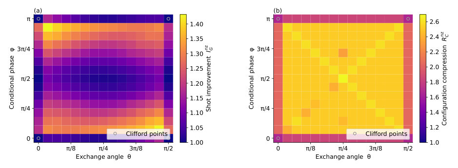
<figcaption class="paper-figure-caption"><b>Fig 1.</b> Figure 1. Analytic grouping expectations over the two-angle fSim family. (a) Leading weighted protocol-shot improvement Inz G = |Ωnz|/ P</figcaption>
</figure>
<figure class="paper-figure-card">
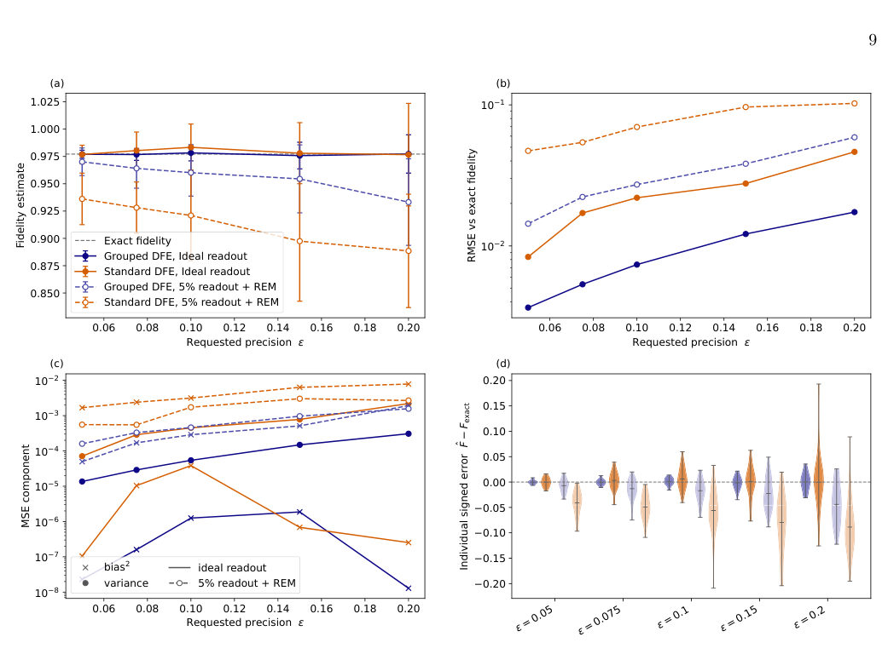
<figcaption class="paper-figure-caption"><b>Fig 2.</b> Figure 2. Fixed-point channel-fidelity estimation for fSim(π/8, π/8) under ideal readout and symmetric 5% readout error followed by linear-inversion REM. We set δ = 0.1 and use 50 independent trials at each requested precision. Indigo-blue and orange denote grouped and standard DFE, respectively; solid, filled marks indicate ideal readout, while dashed, open marks and light-colored violins indicate readout noise plus REM. (a) The trial-mean fidelity estimate with one-standard- deviation intervals and the exact fidelity. (b) The corresponding RMSE, which combines residual bias and finite-shot fluctuations. (c) Its decomposition into squared bias (crosses) and variance (circles). (d) The...</figcaption>
</figure>
<figure class="paper-figure-card">
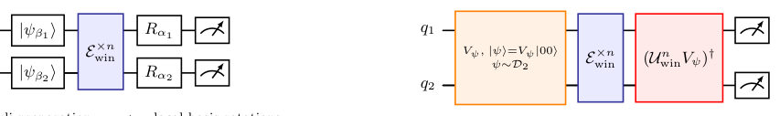
<figcaption class="paper-figure-caption"><b>Fig 3.</b> Figure 3. Circuit templates for estimating the fidelity of the same repeated implemented window E×n win (two wires shown schematically). (a) DFE uses local product Pauli-eigenstate preparations ψβj and local rotations Rαj into the output Pauli measurement bases. Its ideal reference determines the classical sampling distribution but is not applied as a circuit operation. (b) CAFE prepares |ψ⟩= Vψ |00⟩from a two-design D2 and appends the reference inverse (U n winVψ)† before the survival measurement. For a multi-qubit window, both the two-design preparation and the reference inverse are generally entangling, so their implementation can contribute error in addition to the forward window being...</figcaption>
</figure>
<figure class="paper-figure-card">
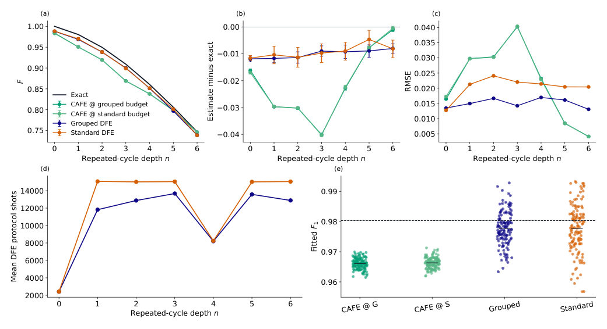
<figcaption class="paper-figure-caption"><b>Fig 4.</b> Figure 4. Fixed-context repeated-cycle estimation for fSim(π/8, π/8) at every depth n = 0, . . . , 6, over 128 independent shot-sampling trials. For all estimates, (ϵ, δ) = (0.05, 0.1). (a) Mean depth-n fidelity estimates with pointwise 95% percentile- bootstrap confidence intervals for the across-trial mean and the exact forward-cycle fidelity. (b) Signed estimator error and intervals. (c) RMSE. (d) The native grouped and standard DFE protocol-shot allocations; the CAFE curves are omitted because they are set to the realized protocol-shot budget of their matched DFE counterpart at every depth in each trial. (e) Cycle fidelity inferred by fitting each trial across the independently...</figcaption>
</figure>
<figure class="paper-figure-card">
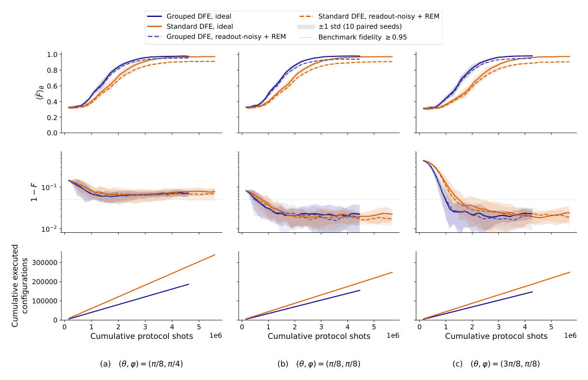
<figcaption class="paper-figure-caption"><b>Fig 5.</b> Figure 5. Calibration convergence for the three representative fSim targets identified at the bottom of their columns. Each column compares ideal readout with a symmetric 5% readout error followed by linear- inversion REM. Solid, filled curves correspond to ideal readout, while dashed, open curves correspond to the readout-noisy-plus-REM condition. Blue and orange denote grouped and standard DFE, respectively, and shaded regions show one standard deviation over 10 paired seeds. The top row reports the batch-mean estimated fidelity used for the parameter update. The middle row gives the independently evaluated noiseless infidelity of the mean policy parameters. The bottom row gives the...</figcaption>
</figure>
</div>

<p><strong>Summary.</strong> This paper presents joint fiducial grouping, a technique to drastically reduce the experimental overhead required for quantum gate fidelity estimation by grouping commuting Pauli pairs. This grouped estimator provides a practical, context-preserving method to estimate entanglement fidelity, which is then leveraged as a reward function to train quantum gates using reinforcement learning.</p>
<p><strong>Why it may be interesting.</strong> The focus on reducing experimental overhead in quantum characterization is crucial for scaling up quantum computation, directly impacting the feasibility of implementing complex quantum algorithms.</p>
<details>
<summary>Detailed structure</summary>
<p><strong>Main problem.</strong> The paper addresses the high experimental overhead associated with direct fidelity estimation (DFE) for characterizing quantum gates, especially when the target gate is non-Clifford.</p>
<p><strong>Main result.</strong> Joint fiducial grouping is introduced to partition Pauli pairs such that multiple transfer coefficients can be estimated using a single preparation-measurement setting, significantly reducing experimental overhead.</p>
<p><strong>Method.</strong> The authors derive an unbiased grouped estimator for entanglement fidelity by grouping commuting input-output Pauli pairs, which is then applied in a context-sensitive reward function for reinforcement learning gate calibration.</p>
<p><strong>Model / system.</strong> The work is applied to characterizing general quantum channels (CPTP maps) and specifically demonstrates its utility for calibrating the parametrically controlled two-qubit gate, fSim(theta, phi).</p>
<p><strong>Key observables.</strong> Pauli transfer coefficients ($\chi_A(\alpha, eta)$), Entanglement fidelity ($F_e(U, E)$), and the context-sensitive reward $J(	heta)$ used in RL.</p>
<p><strong>Important parameters / regimes.</strong> Error parameters ($\epsilon, \delta$), the number of required settings ($M$ vs. $|\Omega|$), and the gate parameters ($   heta, \phi$).</p>
<p><strong>Assumptions / limitations.</strong> The method assumes the ability to measure Pauli transfer coefficients and that grouping is possible based on commuting input/output Paulis. Truncation introduces a quantifiable bias ($W_{disc}$).</p>
<p><strong>Figures summary.</strong> The notes reference Tables I and II, detailing the noise model parameters (e.g., $T_1/T_2$, readout matrices) for the fSim comparison and the specific settings used for PPO/DFE calibration runs.</p>
<p><strong>Paper structure.</strong> The paper first establishes the limitations of standard DFE, then introduces the theoretical framework of joint fiducial grouping to derive the grouped estimator. It then validates this estimator by applying it to the fSim gate and using the resulting fidelity estimates as a reward signal for a model-free reinforcement learning calibration routine.</p>
</details>
<details>
<summary>Abstract</summary>
<p>Fault-tolerant quantum computation hinges on the requirement for low physical error rates. Reaching below threshold regime requires the accounting of circuit dependent noise, that is inherent to the execution context in which a quantum gate is usually embedded. Direct fidelity estimation is a technique that offers natural context preservation as it solely requires the insertion of local Pauli preparation and measurement fiducials around the window of interest. However, each sampled input-output Pauli pair demands its own preparation and measurement setting, an overhead that grows rapidly once the target gate is no longer Clifford. We introduce joint fiducial grouping, which partitions Pauli pairs into sets with commuting input and output operators, allowing several Pauli-transfer coefficients to be estimated within the same preparation-measurement setting. We derive an unbiased grouped estimator and finite-sample guarantees showing that grouping always reduces the number of distinct input-output settings and can also reduce the required channel uses when the target weight is concentrated within compatible groups. We characterize these gains for the parametric two-qubit gate $\mathrm{fSim}(θ,\varphi)$, and use the grouped estimator as a context-sensitive reward for reinforcement-learning-based gate calibration. Our results provide a practical route to lower-overhead, context-preserving fidelity estimation for continuously parameterized quantum gates.</p>
</details>
<p><sub><a href="#top">↑ back to top</a></sub></p>

<p><a id="paper-2608.18267"></a></p>
<h3 id="finite-temperature-greens-function-cluster-expansion-from-thermofield-doubles-breakdown-of-the-polaron-picture"><a href="http://arxiv.org/abs/2608.18267v1">Finite-temperature Green's function cluster expansion from thermofield doubles: Breakdown of the polaron picture</a></h3>
<p><strong>Authors:</strong> M. R. Carbone, S. Fomichev, B. Kloss, A. J. Millis, M. Berciu, D. R. Reichman, J. Sous<br>
<strong>Type:</strong> theory · <strong>Category:</strong> strongly correlated electrons · <strong>PDF:</strong> <a href="https://arxiv.org/pdf/2608.18267v1">https://arxiv.org/pdf/2608.18267v1</a><br>
<strong>Analysis basis:</strong> full PDF text, analyzed in chunks
<strong>Topic relevance:</strong> <code>Keldysh / 2PI / non-Gaussian methods</code> <strong>3/5</strong> · <code>methods for driven-dissipative</code> <strong>2/5</strong></p>
<div class="figure-strip-hint">↔ Scroll figures horizontally</div>
<div class="paper-figures-scroll">
<figure class="paper-figure-card">
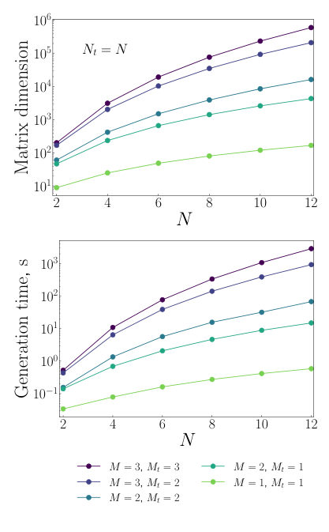
<figcaption class="paper-figure-caption"><b>Fig 1.</b> FIG. 1. (a) Size of the matrix containing the full equations of motion for the Holstein polaron, as a function of the cloud parameters. We fix Nt = N and show representative curves for several values of the real (M) and fictitious (Mt) cloud extents. (b) Equation-generation time as a function of N. Both quantities exhibit power-law scaling with N, as in zero- temperature GGCE, with the doubling of the phonon species entering as a prefactor.</figcaption>
</figure>
<figure class="paper-figure-card">
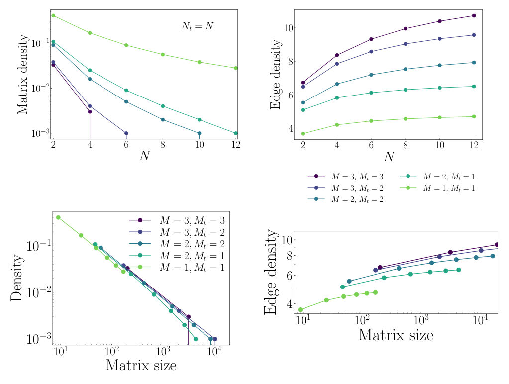
<figcaption class="paper-figure-caption"><b>Fig 2.</b> FIG. 2. (a) Matrix density, defined as the number of non-zero entries divided by the total number of matrix entries, as a function of the cloud cutoff N. (b) Edge density, de ≡nnz/ √</figcaption>
</figure>
<figure class="paper-figure-card">
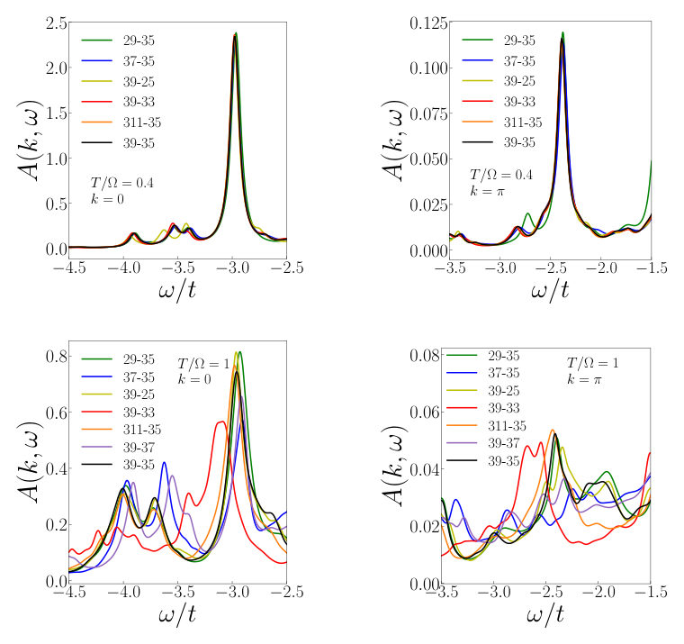
<figcaption class="paper-figure-caption"><b>Fig 3.</b> FIG. 3. Convergence of the spectral function in the cloud parameters (M, N, Mt, Nt) at λ = 1, Ω= 1, for T/Ω= 0.4 (top row) and T/Ω= 1.0 (bottom row), at k = 0 (left column) and k = π (right column). Curves are labeled MN-MtNt. The polaron peak is well-converged at intermediate temperature for MN-MtNt = 39-35 and adjacent configurations; at T/Ω= 1 convergence is slower but the peak position and width remain stable.</figcaption>
</figure>
<figure class="paper-figure-card">
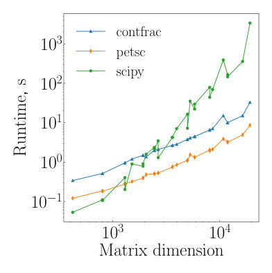
<figcaption class="paper-figure-caption"><b>Fig 4.</b> FIG. 4. Wall-clock time per (k, ω) point for the three available linear-solver backends in the GGCE package: a SciPy direct solver, a continued-fraction (contfrac) solver, and a PETSc- based sparse solver. Calculations are run on one compute node, distributed across 4 MPI ranks with 8 CPUs per rank. PETSc is fastest for matrix sizes above ∼103, where the linear system is no longer canonically sparse.</figcaption>
</figure>
<figure class="paper-figure-card">
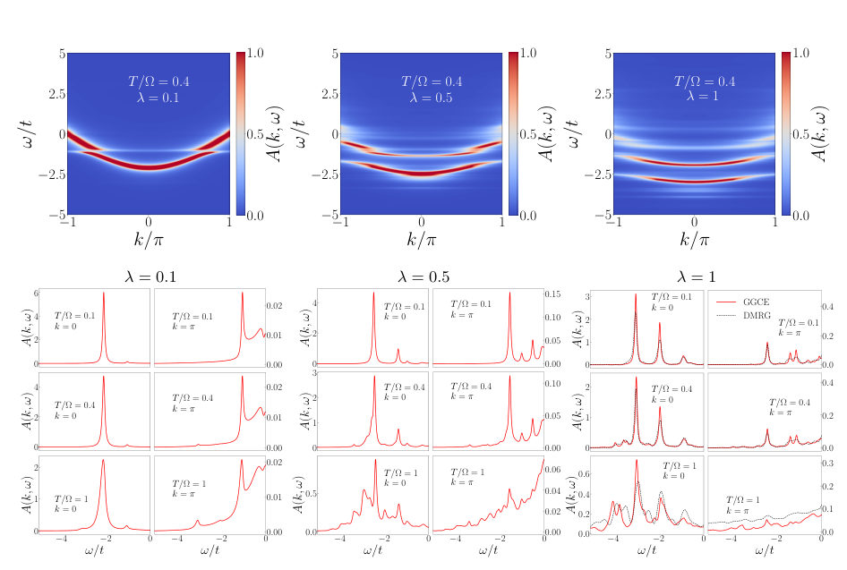
<figcaption class="paper-figure-caption"><b>Fig 5.</b> FIG. 5. (Top row) Spectral functions A(k, ω) for the one-dimensional Holstein model computed with TGCE at T/Ω= 0.4 and varying coupling: λ = 0.1 (left), 0.5 (middle), 1 (right). (Bottom row) Line cuts at k = 0 (left subpanels) and k = π (right subpanels), at three temperatures T/Ω= 0.1, 0.4, 1.0 from top to bottom within each panel. The right column (λ = 1) includes a comparison to finite-T DMRG benchmark data (dashed): at T/Ω= 0.1 and 0.4, from Ref. 25; at T/Ω= 1.0, from our own DMRG calculations, with computational details given in Appendix A. Agreement is semi-quantitative across all three temperatures. Other parameters: Ω= 1, η = 0.05, cloud configuration MN-MtNt = 39-35.</figcaption>
</figure>
</div>

<p><strong>Summary.</strong> This work presents a numerically exact method, the finite-temperature Green's function cluster expansion, to calculate polaron properties at finite temperatures. By combining cluster expansion techniques with the thermofield double formalism, the authors show that the simple picture of a single quasiparticle peak breaks down as temperature increases. This has significant implications for understanding charge transport in materials where electron-phonon coupling is strong.</p>
<p><strong>Why it may be interesting.</strong> The rigorous treatment of finite-temperature effects in strongly coupled electron-phonon systems, particularly the identification of spectral features beyond simple quasiparticle poles, is highly relevant for understanding charge transport in molecular and organic semiconductors.</p>
<details>
<summary>Detailed structure</summary>
<p><strong>Main problem.</strong> The paper aims to compute the momentum- and frequency-resolved single-particle Green's function of a polaron at finite temperature, addressing the breakdown of simple quasiparticle descriptions.</p>
<p><strong>Main result.</strong> The method successfully computes the spectral function across coupling regimes and temperatures, revealing that at finite T, the single-Lorentzian polaron picture breaks down due to hybridization with thermal-satellite continua.</p>
<p><strong>Method.</strong> It introduces the finite-temperature Green's function cluster expansion (TGCE), which combines the generalized Green's function cluster expansion (GGCE) with the thermofield double (TFD) formalism.</p>
<p><strong>Model / system.</strong> The study focuses on the polaron problem, modeled using the Holstein Hamiltonian, describing a charge carrier coupled to dispersive phonons. The TFD formalism maps the thermal trace onto a pure-state expectation value in an enlarged, doubled Hilbert space.</p>
<p><strong>Key observables.</strong> Single-particle Green's function G(k, omega), spectral functions A(k, omega), polaron dispersion, lifetimes, and effective masses.</p>
<p><strong>Important parameters / regimes.</strong> Temperature relative to phonon frequency (T/Omega), coupling strength ($\lambda$), and phonon frequency ($\Omega$).</p>
<p><strong>Assumptions / limitations.</strong> The method is numerically exact in principle, but convergence requires careful handling of the non-trivial configuration structure in the doubled phonon Hilbert space.</p>
<p><strong>Figures summary.</strong> Figures illustrate the matrix size scaling, the convergence of the spectral function at various temperatures, and show the transition of the spectral line shape from a clean Lorentzian at T=0 to multi-peak structures at finite T.</p>
<p><strong>Paper structure.</strong> The paper first introduces the TGCE method by combining GGCE and TFD. It then benchmarks the method on the 1D Holstein polaron, calculating key observables across varying coupling strengths and temperatures, culminating in a discussion of the breakdown of the simple polaron picture.</p>
</details>
<details>
<summary>Abstract</summary>
<p>We introduce a method, numerically exact in principle, for computing the momentum- and frequency-resolved single-particle Green's function of a polaron at finite temperature. The method, which we refer to as the finite-temperature Green's function cluster expansion, combines two ingredients: the generalized Green's function cluster expansion, a numerically exact extension of the momentum average family of methods that solves the polaron problem at zero temperature through a hierarchy of equations of motion for restricted phonon cloud configurations; and the thermofield double formalism, which maps the thermal trace onto a pure-state expectation value over a doubled Hilbert space. The resulting equations of motion have the same algebraic structure as those of the multi-boson zero-temperature theory, with the temperature entering through a Bogoliubov-type mixing angle that controls the coupling to a set of fictitious bath bosons. We implement the method in our open-source software package and benchmark it on the one-dimensional Holstein polaron, computing spectral functions, dispersions, lifetimes, and effective masses across coupling regimes and temperatures up to $T/Ω\sim 1$. Where finite-temperature density matrix renormalization group results are available, we find quantitative agreement at affordable computational cost. The method recovers momentum-resolved spectra directly in frequency space, with no time evolution or analytic continuation. We also discuss the practical costs of the approach. In particular, since the doubled phonon Hilbert space has a non-trivial configuration structure in which real and fictitious clouds compete, convergence in the corresponding cloud parameters requires care.</p>
</details>
<p><sub><a href="#top">↑ back to top</a></sub></p>

<p><a id="paper-2608.18757"></a></p>
<h3 id="robustness-of-spin-state-superpositions-for-noisy-quantum-metrology"><a href="http://arxiv.org/abs/2608.18757v1">Robustness of spin state superpositions for noisy quantum metrology</a></h3>
<p><strong>Authors:</strong> Trinidad B. Lantaño, Gabriela Wójtowicz, Susana F. Huelga, Martin B. Plenio<br>
<strong>Type:</strong> theory · <strong>Category:</strong> quantum information and computing · <strong>PDF:</strong> <a href="https://arxiv.org/pdf/2608.18757v1">https://arxiv.org/pdf/2608.18757v1</a><br>
<strong>Analysis basis:</strong> full PDF text, analyzed in chunks
<strong>Topic relevance:</strong> <code>correlated / nonlocal dissipation</code> <strong>3/5</strong> · <code>quantum measurements</code> <strong>2/5</strong></p>
<div class="figure-strip-hint">↔ Scroll figures horizontally</div>
<div class="paper-figures-scroll">
<figure class="paper-figure-card">
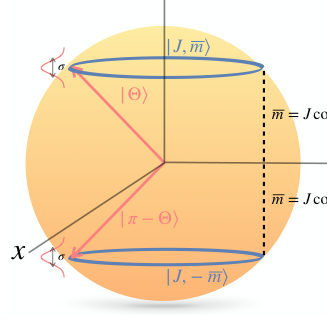
<figcaption class="paper-figure-caption"><b>Fig 1.</b> FIG. 1. Bloch sphere representation of the Gaussian spin states in Eq. (9). Each component of the superposi- tion is shown as a pink arrow, with its projection onto the z- axis represented by a Gaussian distribution of width σ. Pairs of Dicke states |J, m⟩and |J, −m⟩, which share the same z coordinate, are highlighted by blue rings.</figcaption>
</figure>
<figure class="paper-figure-card">
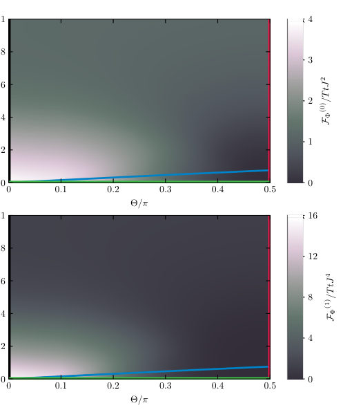
<figcaption class="paper-figure-caption"><b>Fig 2.</b> FIG. 2. Sensitivity and degradation indicators for the GSS ansatz. The sensitivity indicator in Eq. (5) (a) and the degradation indicator in Eq. (7) (b) calculated for the GSS ansatz in Eq. (9). The improved sensitivity coincides with larger degradation under the noise. Specific families of states are marked with solid lines: squeezed states (red), SCCSs (blue), superposition of Dicke states (green), GHZ-like states (black). The data are obtained for J = 20.</figcaption>
</figure>
<figure class="paper-figure-card">
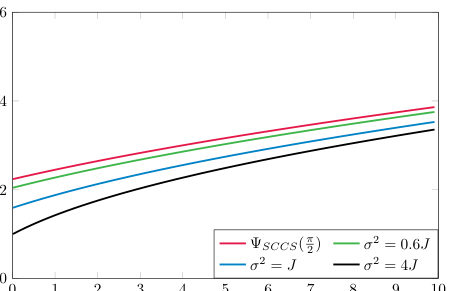
<figcaption class="paper-figure-caption"><b>Fig 3.</b> FIG. 3. Spin-squeezed states under spatially corre- lated dephasing. Quantum Cramer-Rao bound as a func- tion of the interrogation time for a squeezed state defined in Eq. (9) with Θ = π/2 and different variances σ2. Parameter encoding occurs in the presence of correlated dephasing de- scribed by Eq. (2). Data obtained for Φ = 1, spin dimension J = 20 under dephasing amplitude γ = 0.01. Obtained with exact diagonalization.</figcaption>
</figure>
<figure class="paper-figure-card">
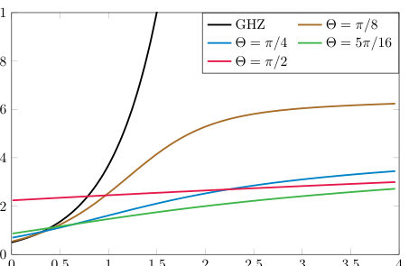
<figcaption class="paper-figure-caption"><b>Fig 4.</b> FIG. 4. Spin coherent cat states under spatially cor- related dephasing. Quantum Cramér–Rao bound for the SCCSs with different orientation Θ. Data obtained for Φ = 1, spin dimension J = 20 under dephasing amplitude γ = 0.01. Obtained with exact diagonalization.</figcaption>
</figure>
<figure class="paper-figure-card">
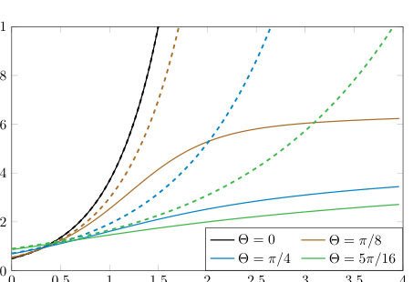
<figcaption class="paper-figure-caption"><b>Fig 5.</b> FIG. 5. Comparison between spin coherent cat states (SCCS) and Dicke cat states. SCCS (solid) and Dicke- cat (dashed) with the same orientation Θ. Data obtained for Φ = 1, spin dimension J = 20 under dephasing amplitude γ = 0.01. Obtained with exact diagonalization.</figcaption>
</figure>
</div>

<p><strong>Summary.</strong> This theoretical paper analyzes the robustness of quantum metrology using spin state superpositions under correlated dephasing noise. By deriving perturbative expressions for the Quantum Fisher Information, the authors characterize a fundamental trade-off: the very moments that boost sensitivity also increase noise susceptibility. The findings guide the selection of optimal quantum states for high-precision measurements in noisy environments.</p>
<p><strong>Why it may be interesting.</strong> This work provides deep analytical insight into the fundamental limitations imposed by noise on quantum sensing protocols, which is crucial for designing robust quantum measurement strategies in physical systems.</p>
<details>
<summary>Detailed structure</summary>
<p><strong>Main problem.</strong> The paper investigates how the precision limits in quantum metrology, quantified by the Quantum Fisher Information (QFI), degrade when the quantum probe state is subjected to noisy environments, specifically spatially correlated dephasing.</p>
<p><strong>Main result.</strong> A key trade-off is identified where the collective-spin moments that enhance the noiseless sensitivity also increase the leading noise-induced decay of the QFI, though certain states like SCCSs show enhanced robustness.</p>
<p><strong>Method.</strong> The authors employ a perturbative framework to derive analytical expressions for the QFI dynamics, comparing these results against the quantum Cramér–Rao bound and measurement-specific sensitivity bounds.</p>
<p><strong>Model / system.</strong> The system modeled is an ensemble of N spins symmetric under particle exchange, analyzed within the fully symmetric subspace of fixed angular momentum J=N/2. The noise is modeled as spatially correlated dephasing.</p>
<p><strong>Key observables.</strong> Quantum Fisher Information (QFI), sensitivity and degradation indicators derived from QFI, and the ultimate precision bound $\Delta^2\Phi_{	ext{opt},t_{	ext{opt}}}$ for phase estimation.</p>
<p><strong>Important parameters / regimes.</strong> Noise strength ($\gamma$), interrogation time ($t$ or $T$), system size ($J$), and squeezing parameter ($\sigma$).</p>
<p><strong>Assumptions / limitations.</strong> The analysis relies on a perturbative treatment valid for weak noise and short interrogation times, and specific approximations are used for the continuum limit of certain state superpositions.</p>
<p><strong>Figures summary.</strong> Figures compare error-propagation and quantum Cramér–Rao bounds for spin-squeezed states, and compare classical and quantum Cramér–Rao bounds for GHZ-like states.</p>
<p><strong>Paper structure.</strong> The paper systematically analyzes the QFI dynamics for various Gaussian Spin States (GSS) superpositions (SCS, Dicke, spin-squeezed, GHZ-like) by deriving perturbative expressions for the QFI, identifying the sensitivity/degradation trade-off, and comparing these bounds to measurement-specific limits.</p>
</details>
<details>
<summary>Abstract</summary>
<p>Quantum metrology faces major challenges in noisy environments, where decoherence rapidly degrades useful quantum resources. We investigate the dynamics of the precision limits given by the quantum Fisher information (QFI) for phase estimation under spatially correlated dephasing. We characterize the dynamics of the QFI by the sensitivity and degradation indicators that can be obtained as analytical expressions derived using perturbative theory treatment. These short-time and weak-noise formulas yield analytic insight into how collective-spin moments govern both (i) the noiseless sensitivity and (ii) the leading noise-induced degradation of metrological usefulness. We identify a trade-off that is intrinsic to our commuting encoding-noise structure. We analyze the QFI dynamics for the Gaussian spin state (GSS) superpositions, encompassing spin coherent state (SCS), Dicke state superpositions, spin-squeezed states, and GHZ-like states. Predictions from indicators of the QFI dynamics are compared to both the quantum Cramér--Rao bound and the measurement-specific sensitivity bounds for an optimal parameter and interrogation time under a finite total time resource. When possible, we analytically derive the measurement-specific sensitivity bounds for spin-projection and parity-based measurements.</p>
</details>
<p><sub><a href="#top">↑ back to top</a></sub></p>

<p><a id="paper-2608.19057"></a></p>
<h3 id="distinct-modes-of-quantum-information-transfer-in-power-law-long-range-spin-networks"><a href="http://arxiv.org/abs/2608.19057v1">Distinct Modes of Quantum Information Transfer in Power-Law Long-Range Spin Networks</a></h3>
<p><strong>Authors:</strong> E. E. Marshall, C. C. Nelmes, T. J. G. Apollaro, T. P. Spiller, I. D'Amico<br>
<strong>Type:</strong> theory · <strong>Category:</strong> quantum information and computing · <strong>PDF:</strong> <a href="https://arxiv.org/pdf/2608.19057v1">https://arxiv.org/pdf/2608.19057v1</a><br>
<strong>Analysis basis:</strong> full PDF text, analyzed in chunks
<strong>Topic relevance:</strong> <code>analog quantum simulation</code> <strong>3/5</strong> · <code>correlated / nonlocal dissipation</code> <strong>1/5</strong></p>
<div class="figure-strip-hint">↔ Scroll figures horizontally</div>
<div class="paper-figures-scroll">
<figure class="paper-figure-card">
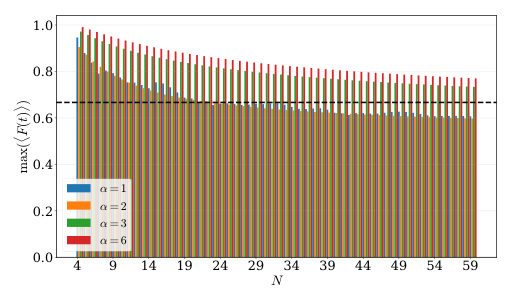
<figcaption class="paper-figure-caption"><b>Fig 1.</b> FIG. 1: Maximal average fidelity as a function of total number of sites N ∈[4, 60] for α-chains, evaluated over a total time window t · J0 = Nπ/2, corresponding to twice the speed limit for perfect state transfer (PST) in nearest-neighbour systems [18]. Horizontal (dashed) line corresponds to the limit in which there is quantum advantage over classical means of communication [51]. In the large-α limit, the XX (effective) nearest-neighbour spin chain is known to lose its quantum advantage for communication at N ≈240 [52].</figcaption>
</figure>
<figure class="paper-figure-card">
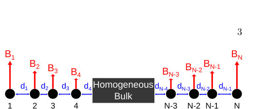
<figcaption class="paper-figure-caption"><b>Fig 2.</b> FIG. 2: A diagram showing an example chain of length N with 4 optimised site positions, with di the distance between two adjacent sites and on-site energies, Bi, on each end of the chain, preserving mirror symmetry.</figcaption>
</figure>
<figure class="paper-figure-card">
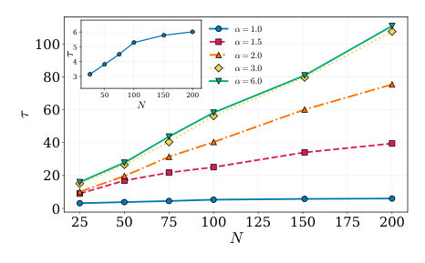
<figcaption class="paper-figure-caption"><b>Fig 3.</b> FIG. 3: Time at which the fidelity is maximal τ plotted as a function of the total number of sites N, across increasing strengths of the power-law exponent α. Inset presents a zoomed-in window of the α = 1 chains, highlighting the distinguishability of the individual data points.</figcaption>
</figure>
<figure class="paper-figure-card">
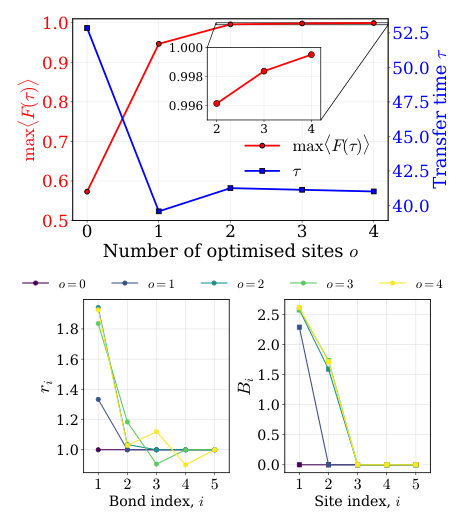
<figcaption class="paper-figure-caption"><b>Fig 4.</b> FIG. 4: Top panel shows, for a fixed N = 100 site long-range (α = 2) chain, how increasing the number of optimised boundary sites o, from 0 to 4 leads to near-perfect ( 99.99%) average fidelity and fast transfer time, eventually approaching a saturation regime. Bottom panel illustrates the corresponding optimised spatial profiles of the spacing between sites and local magnetic fields across the lattice: the bulk remains homogeneous with uniform bond strength and zero field modulation, while non-trivial structure develops only near the boundaries.</figcaption>
</figure>
<figure class="paper-figure-card">
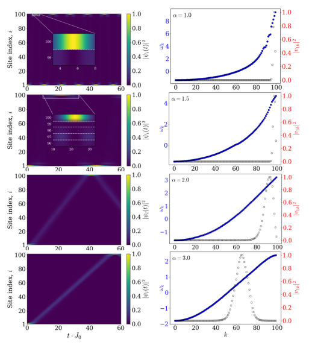
<figcaption class="paper-figure-caption"><b>Fig 5.</b> FIG. 5: Distinct transfer dynamics associated with optimized chains for the selected sequences of α values (left column), alongside the localization of the initial-state distribution in k-space over the ordered spectrum (right column) of the corresponding varied-α, N = 100-site chain.</figcaption>
</figure>
</div>

<p><strong>Summary.</strong> This work analyzes how the range of interactions in a spin chain dictates quantum information transfer dynamics. By varying the power-law decay exponent $\alpha$, the authors distinguish between standard wavepacket spreading and novel, faster transfer modes arising from spectral localization. This has implications for designing robust quantum communication channels.</p>
<p><strong>Why it may be interesting.</strong> It provides a theoretical framework for designing quantum channels by tuning interaction decay rates, showing how spectral properties dictate the speed and mechanism of quantum information transport.</p>
<details>
<summary>Detailed structure</summary>
<p><strong>Main problem.</strong> The paper investigates the distinct mechanisms governing quantum state transfer fidelity in spin networks whose interactions decay according to a power law.</p>
<p><strong>Main result.</strong> Long-range interactions (low power-law exponent $\alpha$) fundamentally change the transfer dynamics, leading to emergent, faster oscillations confined to a few high-energy eigenmodes, contrasting with the ballistic spread seen in short-range systems.</p>
<p><strong>Method.</strong> The study uses theoretical analysis of the XX Hamiltonian, calculating quantum state transfer fidelity via single-particle transition amplitudes derived from the system's spectrum.</p>
<p><strong>Model / system.</strong> The model is a spin-1/2 chain governed by an XX Hamiltonian with long-range couplings decaying as $J_{i,j} \propto r_{\alpha}^{i,j}$. The coupling range is controlled by the power-law exponent $\alpha$.</p>
<p><strong>Key observables.</strong> Average fidelity $\langle F(t) \rangle$, arrival time $\tau$, and the spectral distribution of the initial state.</p>
<p><strong>Important parameters / regimes.</strong> The power-law exponent $\alpha$ (controlling interaction range), chain length $N$, and the coupling strength $J_0$.</p>
<p><strong>Assumptions / limitations.</strong> The analysis focuses on the transfer of an arbitrary single-qubit quantum state injected at one end of the chain.</p>
<p><strong>Figures summary.</strong> Figures illustrate the dependence of transfer time ($\tau$) on chain length ($N$) and $\alpha$, comparing few-mode oscillations ($\alpha \le 1.5$) to wavepacket propagation ($\alpha \ge 2.0$).</p>
<p><strong>Paper structure.</strong> The paper systematically analyzes the dynamics across different $\alpha$ regimes, contrasting short-range (ballistic) vs. long-range (few-mode coherent) transfer, and details the optimization methods used to maintain high fidelity.</p>
</details>
<details>
<summary>Abstract</summary>
<p>We identify different regimes of quantum state transfer in long-range coupled spin-$\frac{1}{2}$ systems, where naturally occurring power-law interactions enable rapid, high-fidelity transfer with minimal engineering. Across a broad range of interaction profiles, from effectively nearest-neighbour coupling to Coulomb interactions, we show how long-range connectivity fundamentally reshapes the mechanisms underlying information propagation within such systems. For effectively short-range interactions, transfer follows familiar ballistic transfer dynamics: an initially localised excitation spreads across many eigenmodes concentrated within the approximately linear region of the spectrum, enabling robust wavepacket motion. In contrast, increasing long-distance interactions via lowering the power-law exponent $α$ ($α=1-2$) drives a striking transformation, where the initial state becomes confined to progressively fewer eigenmodes, ultimately reducing the dynamics to the coherent participation of only a few states corresponding to the highest eigenenergies. This spectral localization gives rise to emergent long-range oscillations between distant sites, revealing a distinct -- and faster -- transfer mechanism arising from the intrinsic structure of long-range quantum interactions rather than from full-system engineering pathways.</p>
</details>
<p><sub><a href="#top">↑ back to top</a></sub></p>

<p><a id="paper-2608.18886"></a></p>
<h3 id="the-exact-price-of-local-realism-in-chsh-experiments-a-measurement-dependence-detection-trade-off-surface-a-moire-phase-locking-mechanism-that-saturates-it-and-an-unmeasured-fringe-in-the-fourfold-coincidence-sum"><a href="http://arxiv.org/abs/2608.18886v1">The exact price of local realism in CHSH experiments: a measurement-dependence-detection trade-off surface, a moiré phase-locking mechanism that saturates it, and an unmeasured fringe in the fourfold coincidence sum</a></h3>
<p><strong>Authors:</strong> Aaron Alai<br>
<strong>Type:</strong> theory · <strong>Category:</strong> other · <strong>PDF:</strong> <a href="https://arxiv.org/pdf/2608.18886v1">https://arxiv.org/pdf/2608.18886v1</a><br>
<strong>Analysis basis:</strong> full PDF text, analyzed in chunks
<strong>Topic relevance:</strong> <code>quantum measurements</code> <strong>3/5</strong> · <code>analog quantum simulation</code> <strong>1/5</strong></p>
<div class="figure-strip-hint">↔ Scroll figures horizontally</div>
<div class="paper-figures-scroll">
<figure class="paper-figure-card">
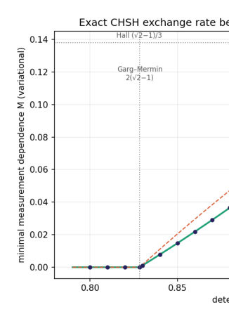
<figcaption class="paper-figure-caption"><b>Fig 1.</b> Figure 1: The S = 2 √</figcaption>
</figure>
<figure class="paper-figure-card">
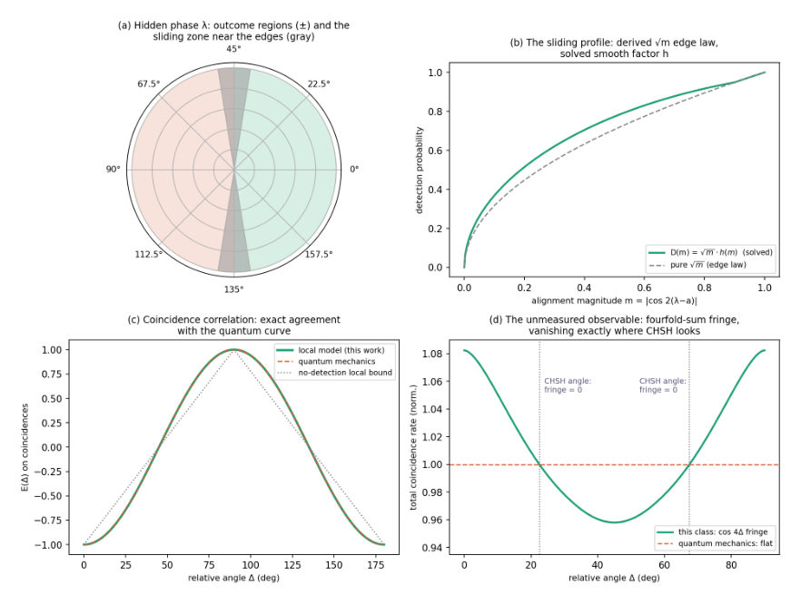
<figcaption class="paper-figure-caption"><b>Fig 2.</b> Figure 2: The detection sector. (a) Hidden-phase outcome regions and the sliding zone; (b) the solved profile D(m) = √m h(m) with its derived edge law; (c) exact agreement of the coincidence correlation with the quantum curve; (d) the fourfold-sum fringe, vanishing identically at the CHSH angles (Theorem 2).</figcaption>
</figure>
<figure class="paper-figure-card">
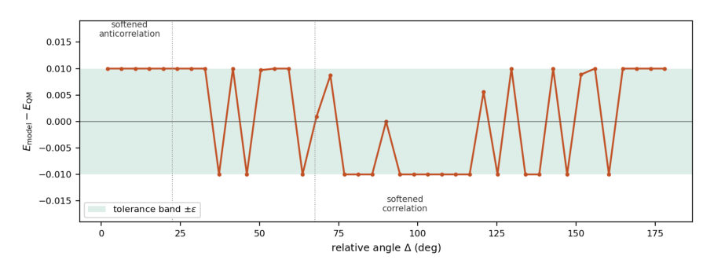
<figcaption class="paper-figure-caption"><b>Fig 3.</b> Figure 3: Residual correlation pattern Emodel −EQM of the mechanism at uniform tolerance ε = 0.01 (41 pinned angles; optimal solutions ride the tolerance band, as linear-programming vertices must). The robust content is the sign envelope: positive residuals where EQM →−1 (∆≲33◦, ≳164◦) and a negative plateau where EQM →+1 (76◦−116◦): the mechanism softens the correlation extremes, paying its tolerance where perfection is demanded. This visibility-like signature, at the ≤1% level between the Bell angles, is the mechanism’s falsifiable fingerprint.</figcaption>
</figure>
<figure class="paper-figure-card">
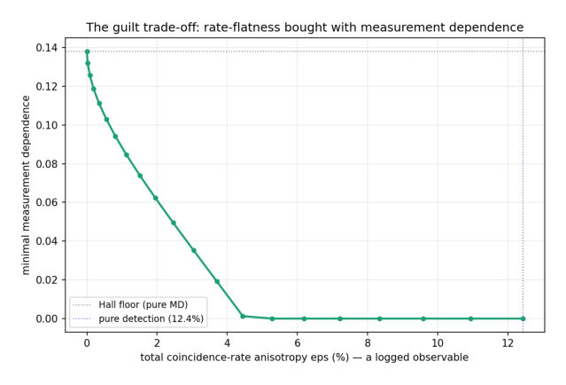
<figcaption class="paper-figure-caption"><b>Fig 4.</b> Figure 4: The trade-off between the two channel signatures: minimal measurement dependence versus fourfold-sum anisotropy along the interpolating detection family.</figcaption>
</figure>
<figure class="paper-figure-card">
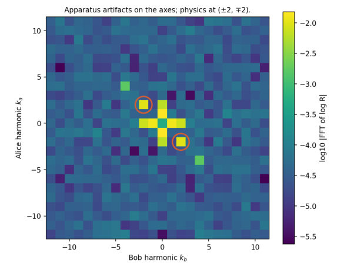
<figcaption class="paper-figure-caption"><b>Fig 5.</b> Figure 5: Simulated protocol analysis: log-Fourier plane of the rate map over the settings torus. Factorizable apparatus response occupies the axes; the physical signal occupies the circled anti- diagonal pixels.</figcaption>
</figure>
</div>

<p><strong>Summary.</strong> This theoretical paper quantifies the 'price'—the required measurement dependence—that local hidden-variable theories must pay to reproduce experimental CHSH violation values given detector inefficiencies. It derives a precise trade-off surface and predicts a specific, unmeasured $\cos 4(a-b)$ fringe in the fourfold coincidence sum, offering a new, falsifiable diagnostic tool beyond standard Bell inequality tests.</p>
<p><strong>Why it may be interesting.</strong> While focused on Bell tests, the rigorous mathematical framework involving variational measures, detection profiles, and the identification of non-local residual correlations provides deep insights into the limitations of local models, which has parallels in understanding entanglement structure in quantum information.</p>
<details>
<summary>Detailed structure</summary>
<p><strong>Main problem.</strong> The paper determines the minimal measurement dependence required for local hidden-variable accounts to reproduce observed CHSH values, quantifying the trade-off between measurement dependence and detection efficiency.</p>
<p><strong>Main result.</strong> A precise formula for the minimal measurement dependence $M(S, \eta_{	ext{eff}})$ is derived, and the analysis identifies a residual $\cos 4(a-b)$ fringe in the fourfold coincidence sum as a falsifiable fingerprint of local realism violations.</p>
<p><strong>Method.</strong> The analysis uses linear programming over local strategies and involves solving functional equations related to detection profiles, alongside Fourier analysis of coincidence rates.</p>
<p><strong>Model / system.</strong> The study analyzes Bell tests using a polarization singlet state in CHSH experiments, modeling the constraints imposed by local hidden variables (LHV) on measured coincidence rates.</p>
<p><strong>Key observables.</strong> CHSH value ($S$), Measurement dependence ($M$), Fourfold coincidence sum modulation ($\cos 4(a-b)$ fringe), and detection efficiency ($\eta_{	ext{eff}}$).</p>
<p><strong>Important parameters / regimes.</strong> The quantum point ($S=2\sqrt{2}$), the effective detector efficiency ($\eta_{	ext{eff}}$), and the measurement dependence measure $M$.</p>
<p><strong>Assumptions / limitations.</strong> The analysis assumes the LHV accounts are 'faithful' (reproducing singles and coincidence rates) and investigates the implications of assuming angle-independent coincidence rates.</p>
<p><strong>Figures summary.</strong> Figures illustrate the price surface $M(S, \eta_{	ext{eff}})$, comparing the derived formula against known bounds, and show the residual correlation pattern in the fourfold coincidence sum.</p>
<p><strong>Paper structure.</strong> The paper first establishes the minimal measurement dependence price surface via linear programming. It then proves impossibility results for pure-detection models and introduces the moiré phase-locking mechanism as a saturating local account. Finally, it analyzes the residual fringe structure and presents computational verification of the trade-off.</p>
</details>
<details>
<summary>Abstract</summary>
<p>For local hidden-variable accounts of the CHSH experiment that are faithful -- reproducing the observed singles and coincidence rates and unbiased marginals of a polarization singlet with symmetric detector efficiency $η_{\rm eff}$ -- I determine the minimal measurement dependence $M$ (Hall's variational measure) needed to achieve a CHSH value $S$. Linear programming over all local strategies yields, to machine precision at 32 grid points, $M(S,η_{\rm eff})=\max\{0,η_{\rm eff}((S+2)η_{\rm eff}-4)/6\}$, whose edges reproduce Hall's tight bound at $η_{\rm eff}=1$, the Garg-Mermin detection threshold, and the postselection ceiling $S=4/η_{\rm eff}-2$. The quantum point is certified exactly: $M(2\sqrt{2},9/10)=(27\sqrt{2}-33)/100$, with primal and dual certificates in $\mathbb{Q}(\sqrt{2})$ arithmetic. I solve the unique detection profile $D(m)=\sqrt{m}\,h(m)$ under which a deterministic sign model reproduces the singlet exactly, derive the $\sqrt{m}$ edge law, and prove exact quantum correlations and angle-independent coincidence rates jointly impossible for any pure-detection model of this class. Surviving local accounts trade off measurement dependence against a $\cos 4(a-b)$ modulation of the fourfold coincidence sum, of relative amplitude up to 12.4%, which vanishes identically at the CHSH angles and appears never to have been bounded below 1%. A settings-torus protocol reaches $5σ$ sensitivity at 0.1% within hours: a flat result forces $M\gtrsim 95\%$ of Hall's floor; a fringe would contradict the flat-rate prediction of quantum mechanics. Finally I exhibit a local mechanism -- moire phase locking -- with deterministic phase evolution and all randomness quenched in frozen lattice offsets and flight times, which attains the certified floor exactly at $η_{\rm eff}=1$ (10% uniform fidelity); its softening of the correlation extremes is a falsifiable fingerprint.</p>
</details>
<p><sub><a href="#top">↑ back to top</a></sub></p>

<p><a id="paper-2608.18644"></a></p>
<h3 id="branching-almost-everywhere-and-all-at-once"><a href="http://arxiv.org/abs/2608.18644v1">Branching (Almost) Everywhere And All at Once</a></h3>
<p><strong>Authors:</strong> Alyssa Ney<br>
<strong>Type:</strong> theory · <strong>Category:</strong> other · <strong>PDF:</strong> <a href="https://arxiv.org/pdf/2608.18644v1">https://arxiv.org/pdf/2608.18644v1</a><br>
<strong>Analysis basis:</strong> full PDF text, analyzed in chunks
<strong>Topic relevance:</strong> <code>quantum measurements</code> <strong>3/5</strong></p>
<div class="figure-strip-hint">↔ Scroll figures horizontally</div>
<div class="paper-figures-scroll">
<figure class="paper-figure-card">
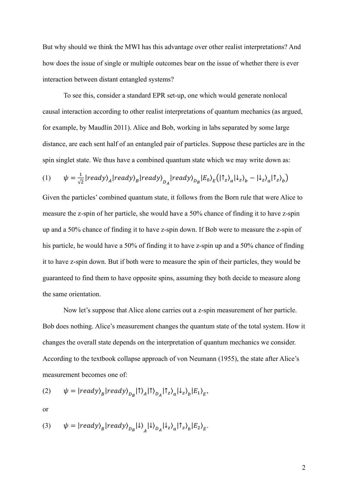
<figcaption class="paper-figure-caption"><b>Fig 1.</b> Low-resolution page preview, page 2</figcaption>
</figure>
<figure class="paper-figure-card">
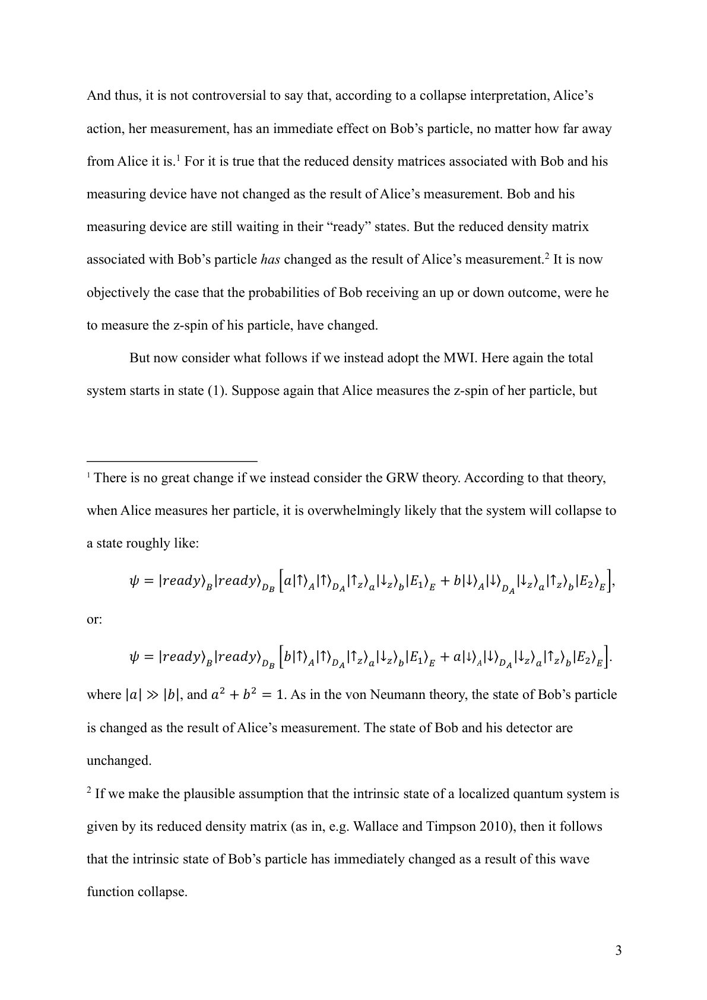
<figcaption class="paper-figure-caption"><b>Fig 2.</b> Low-resolution page preview, page 3</figcaption>
</figure>
<figure class="paper-figure-card">
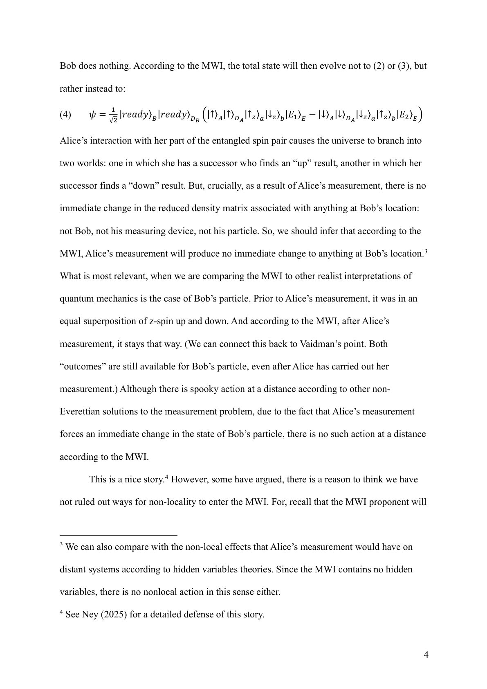
<figcaption class="paper-figure-caption"><b>Fig 3.</b> Low-resolution page preview, page 4</figcaption>
</figure>
<figure class="paper-figure-card">
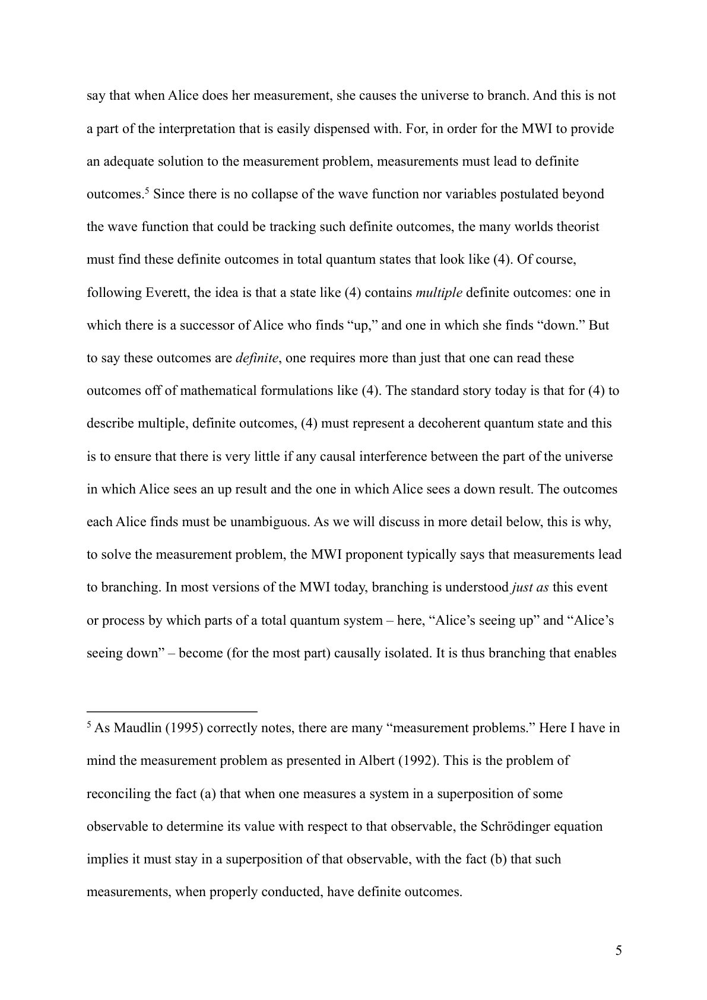
<figcaption class="paper-figure-caption"><b>Fig 4.</b> Low-resolution page preview, page 5</figcaption>
</figure>
<figure class="paper-figure-card">
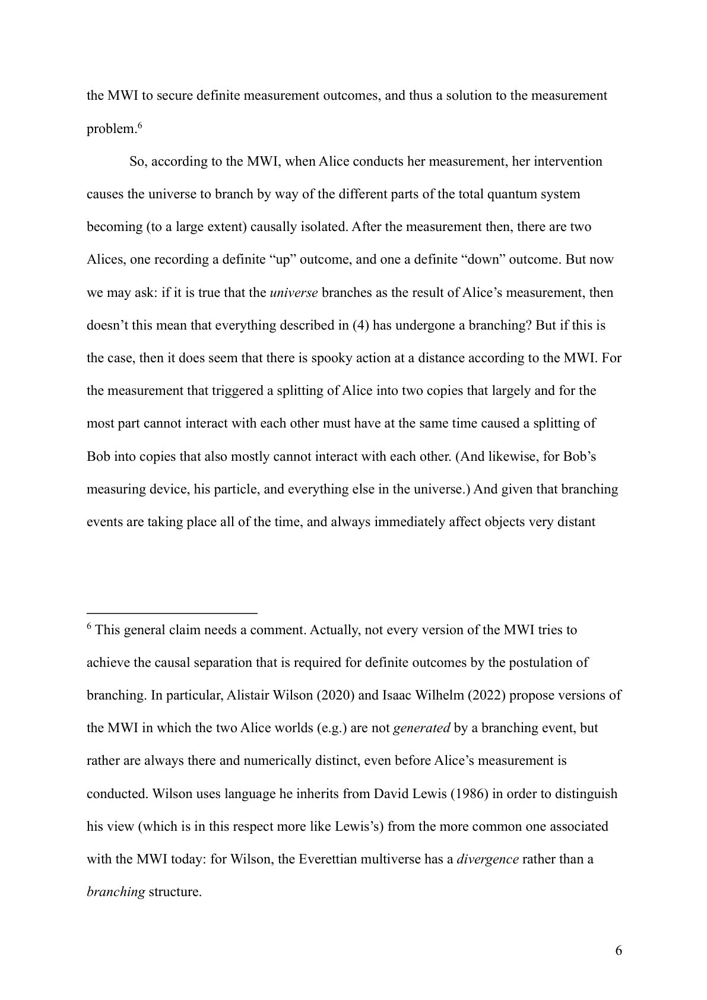
<figcaption class="paper-figure-caption"><b>Fig 5.</b> Low-resolution page preview, page 6</figcaption>
</figure>
</div>

<p><strong>Summary.</strong> This paper tackles the foundational conflict between the Many-Worlds Interpretation (MWI) and special relativity by analyzing the concept of quantum branching. The author argues against viewing branching as a local, causal process, proposing instead a global branching view. This global view is shown to be compatible with relativity because the physical mechanism does not require superluminal action across spacetime.</p>
<p><strong>Why it may be interesting.</strong> This is highly relevant for theoretical physicists working on open quantum systems and quantum foundations, as it tackles the fundamental interpretation of measurement and the relationship between quantum formalism (decoherence) and physical reality (branching).</p>
<details>
<summary>Detailed structure</summary>
<p><strong>Main problem.</strong> The paper addresses the conflict between the Many-Worlds Interpretation (MWI) of quantum mechanics and the principle of relativistic locality, specifically regarding the nature of 'spooky action at a distance' during quantum branching.</p>
<p><strong>Main result.</strong> The author argues that the global branching view of MWI is compatible with special relativity because the physical mechanism involves no intrinsic, superluminal change at a distant location, unlike the local causal branching view.</p>
<p><strong>Method.</strong> The analysis involves comparing different conceptualizations of quantum measurement outcomes (collapse vs. MWI) and developing a linguistic/ontological distinction between the physical process of decoherence and the emergent concept of global branching.</p>
<p><strong>Model / system.</strong> The discussion centers on the Many-Worlds Interpretation (MWI) applied to standard quantum measurements, using the EPR setup as a primary diagnostic tool to test locality constraints.</p>
<p><strong>Key observables.</strong> The reduced density matrix of a distant particle (Bob's particle) is used to diagnose non-local effects; the concept of 'branching' itself is the key diagnostic.</p>
<p><strong>Important parameters / regimes.</strong> The speed of light (c) and the requirement of relativistic locality are central constraints. The distinction between local vs. global branching is the primary parameter space explored.</p>
<p><strong>Assumptions / limitations.</strong> The argument relies on distinguishing between decoherence (a microphysical process) and branching (an emergent ontology), and assumes that intrinsic physical features are best captured by reduced density matrices.</p>
<p><strong>Paper structure.</strong> The paper progresses by first establishing the conflict between MWI and locality, then critically evaluating the 'local branching view' (which attempts to preserve causality), and finally advocating for a 'global branching view' that reconciles MWI with special relativity by redefining the nature of the branching event.</p>
</details>
<details>
<summary>Abstract</summary>
<p>It is sometimes said that a reason to prefer Everettian quantum mechanics is that it allows one to avoid the kind of spooky action at a distance that is a consequence of quantum entanglement according to other approaches. There is a straightforward argument to show EQM has this virtue, however some advocates argue that this requires we see branching as a local causal process. I explain this reasoning and then show why, given the way Everettians standardly conceive of worlds and branching as emergent phenomena, branching need not be viewed as a causal process for EQM to be relativistically local. Forthcoming in Local Quantum Mechanics, OUP 2026.</p>
</details>
<p><sub><a href="#top">↑ back to top</a></sub></p>

<p><a id="paper-2608.18530"></a></p>
<h3 id="high-field-fate-of-the-kitaev-quantum-spin-liquid-in-math213math-ruclmath214math"><a href="http://arxiv.org/abs/2608.18530v1">High-field fate of the Kitaev quantum spin liquid in $α$-RuCl$_3$</a></h3>
<p><strong>Authors:</strong> K. Imamura, R. Ohno, Y. C. Tsuzuki, Y. Akui, R. Namba, K. Ishihara, M. Akaki, M. Kimata, N. Kurita, H. Tanaka, N. Kimura, S. Imajo, A. Matsuo, K. Kindo, Y. Matsuda, K. Hashimoto, Y. Mizukami, T. Shibauchi<br>
<strong>Type:</strong> experiment · <strong>Category:</strong> strongly correlated electrons · <strong>PDF:</strong> <a href="https://arxiv.org/pdf/2608.18530v1">https://arxiv.org/pdf/2608.18530v1</a><br>
<strong>Analysis basis:</strong> full PDF text, analyzed in chunks
<strong>Topic relevance:</strong> <code>analog quantum simulation</code> <strong>3/5</strong></p>
<div class="figure-strip-hint">↔ Scroll figures horizontally</div>
<div class="paper-figures-scroll">
<figure class="paper-figure-card">
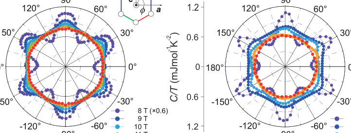
<figcaption class="paper-figure-caption"><b>Fig 1.</b> FIG. 1. (a) Field-angle dependence of specific heat divided by temperature C/T at T = 1 K as a function of the in-plane field angle ϕ for several magnetic fields, measured on a two-step sublimation crystal. Data in the range 8-11 T are taken from the previous work [29]. The inset defines ϕ as the in-plane field-angle measured from the a axis, which is perpendicular to a Ru-Ru bond direction of the honeycomb lattice. (b) Field-angle dependence of C/T at T = 0.7 K as a function of ϕ for several magnetic fields, measured on a crystal grown by the Bridgman method.</figcaption>
</figure>
<figure class="paper-figure-card">
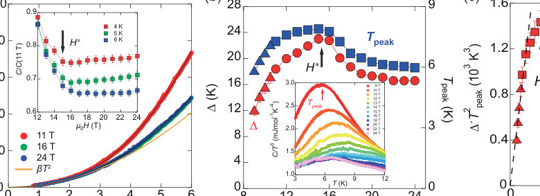
<figcaption class="paper-figure-caption"><b>Fig 2.</b> FIG. 2. (a) Temperature dependence of the specific heat divided by temperature C/T at 11 T (red), 16 T (green), and 24 T (blue) for H ∥a. The black solid lines show fits to the data below 6 K. The orange line represents the phonon contribution βT 2</figcaption>
</figure>
<figure class="paper-figure-card">
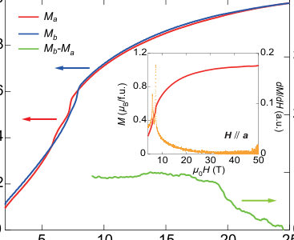
<figcaption class="paper-figure-caption"><b>Fig 3.</b> FIG. 3. In-plane field dependence of magnetization for H ∥a (Ma, red) and H ∥b (Mb, blue), together with the in-plane anisotropy Mb −Ma at T = 1.35 K. The inset presents high- field magnetization Ma (red) up to 50 T for H ∥a and the corresponding differential susceptibility dM/dH (orange).</figcaption>
</figure>
<figure class="paper-figure-card">
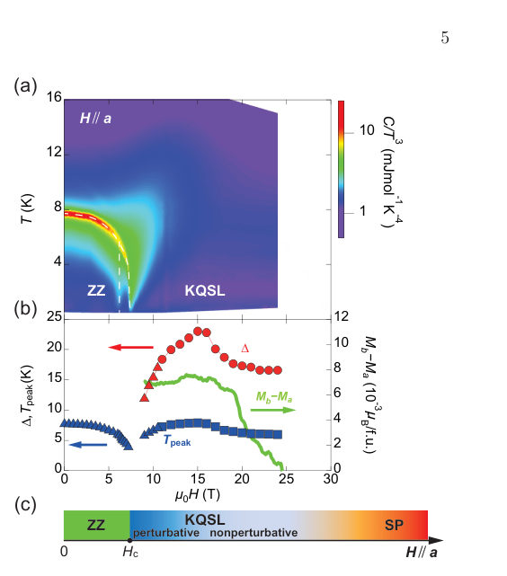
<figcaption class="paper-figure-caption"><b>Fig 4.</b> FIG. 4. (a) Phase diagram in the field-temperature plane for H ∥a. Superimposed color maps represent the magnitude of C/T 3. (b) Field dependence of the excitation gap ∆(red), the peak temperature Tpeak (blue), and the in-plane magnetiza- tion anisotropy Mb−Ma (green). (c) Schematic high-field evo- lution for H ∥a, summarizing the zigzag (ZZ) phase at low fields, the perturbative and nonperturbative KQSL regimes, and the crossover toward the spin-polarized (SP) phase at high fields.</figcaption>
</figure>
</div>

<p><strong>Summary.</strong> This work investigates how the Kitaev quantum spin liquid state in $\alpha$-RuCl$_3$ behaves under very strong magnetic fields. By measuring specific heat up to 24 T, the researchers found that topological signatures, like angular modulations, persist far beyond the limits of simple theoretical models. This reveals a complex, nonperturbative high-field phase where the underlying fractionalized excitations remain active.</p>
<p><strong>Why it may be interesting.</strong> The persistence of fractionalized excitations (Majorana/vison merging) in a nonperturbative, high-field regime provides crucial insight into the robustness of topological quantum matter under extreme conditions, relevant for understanding emergent quantum phases.</p>
<details>
<summary>Detailed structure</summary>
<p><strong>Main problem.</strong> The primary goal is to determine the fate of the Kitaev quantum spin liquid (KQSL) state in $\alpha$-RuCl$_3$ when subjected to strong external magnetic fields, especially beyond the regime where simple perturbative theories apply.</p>
<p><strong>Main result.</strong> KQSL signatures persist well beyond the perturbative window, indicating a nonperturbative regime where Majorana and vison energy scales merge, contrasting sharply with predictions for a simple spin-polarized state.</p>
<p><strong>Method.</strong> The study relies on high-field specific heat measurements ($C/T$) and in-plane magnetization measurements, analyzing the field and angle dependence of thermodynamic quantities.</p>
<p><strong>Model / system.</strong> The system is the layered honeycomb magnet $\alpha$-RuCl$_3$, which is investigated as a realization of the Kitaev quantum spin liquid (KQSL) model, featuring itinerant Majorana quasiparticles and gapped $Z_2$ fluxes (visons).</p>
<p><strong>Key observables.</strong> Specific heat divided by temperature ($C/T$), in-plane magnetization anisotropy, and the extracted excitation gap ($\Delta$).</p>
<p><strong>Important parameters / regimes.</strong> Magnetic field strength (up to 24 T), crossover field $H^* \approx 15$ T, and the temperature $T$.</p>
<p><strong>Assumptions / limitations.</strong> The analysis involves fitting $C/T$ data using activated forms to extract an effective gap, and the initial analysis relies on the perturbative Kitaev description.</p>
<p><strong>Figures summary.</strong> Figures show the field-angle dependence of $C/T$ (revealing six-fold modulation at low fields), the evolution of the extracted gap $\Delta$ (showing non-monotonic behavior), and the persistence of magnetization anisotropy up to high fields.</p>
<p><strong>Paper structure.</strong> The paper progresses by first establishing the expected behavior in the perturbative regime (low fields), then identifying the breakdown point ($H^*$), and finally mapping the nonperturbative high-field regime by tracking the persistence of topological signatures.</p>
</details>
<details>
<summary>Abstract</summary>
<p>Kitaev quantum spin liquids (KQSLs) host fractionalized excitations described by itinerant Majorana quasiparticles and gapped $Z_2$ fluxes (visons), providing a platform for emergent topological matter. Whether such a state survives under strong magnetic fields, however, remains an open question. The layered honeycomb magnet $α$-RuCl$_3$ is a leading candidate material: an in-plane field of $\sim$ 7 T suppresses antiferromagnetic order and induces a quantum-disordered phase exhibiting signatures consistent with Majorana excitations, including an anomalous thermal Hall effect and field-angle-dependent specific heat. At higher fields, the magnetization approaches saturation, suggesting a transition to a spin-polarized state, yet the microscopic evolution between these limits remains unresolved. Here we report high-field specific heat measurements up to 24 T that reveal a distinct crossover at $μ_0H^*\approx$15 T, beyond which the perturbative Kitaev description breaks down. Above $H^*$, the characteristic six-fold angular modulation of the specific heat collapses and the excitation gap deviates from the predicted $H^3$ scaling. Meanwhile, the gap decreases with increasing field and the in-plane magnetization anisotropy persists up to $\sim$ 24 T, both in sharp contrast to a trivial spin-polarized state, indicating that KQSL signatures are preserved even at $\sim$ 90 % of magnetization saturation. These results reveal that the KQSL in $α$-RuCl$_3$ extends well beyond the perturbative window, persisting as a nonperturbative regime in which the Majorana and vison energy scales merge, before eventually giving way to spin polarization. This thermodynamic roadmap provides a basis for understanding how fractionalized phases evolve under strong magnetic fields.</p>
</details>
<p><sub><a href="#top">↑ back to top</a></sub></p>

<p><a id="paper-2608.19091"></a></p>
<h3 id="non-local-search-to-decision-reduction-over-f2"><a href="http://arxiv.org/abs/2608.19091v1">Non-Local Search-to-Decision Reduction over F2</a></h3>
<p><strong>Authors:</strong> Prabhanjan Ananth<br>
<strong>Type:</strong> theory · <strong>Category:</strong> quantum information and computing · <strong>PDF:</strong> <a href="https://arxiv.org/pdf/2608.19091v1">https://arxiv.org/pdf/2608.19091v1</a><br>
<strong>Analysis basis:</strong> full PDF text, analyzed in chunks
<strong>Topic relevance:</strong> <code>quantum measurements</code> <strong>3/5</strong></p>
<div class="figure-strip-hint">↔ Scroll figures horizontally</div>
<div class="paper-figures-scroll">
<figure class="paper-figure-card">
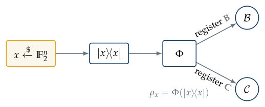
<figcaption class="paper-figure-caption"><b>Fig 1.</b> Figure 1: The information-distribution stage. A uniformly random string is encoded by an arbitrary channel into the bipartite state ρx. Bob and Charlie receive disjoint registers and cannot communicate.</figcaption>
</figure>
<figure class="paper-figure-card">
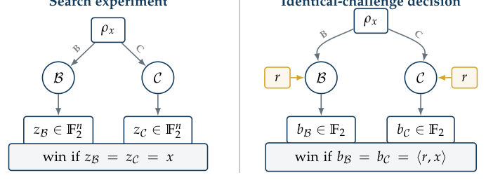
<figcaption class="paper-figure-caption"><b>Fig 2.</b> Figure 2: The search and decision experiments for identical-challenge non-local search-to-decision. Full- string recovery is tested on the left. On the right, the same random challenge r is delivered to both parties and both must return its inner product with x. The two nodes labelled r represent two classical copies of one uniformly sampled challenge, not independent samples.</figcaption>
</figure>
<figure class="paper-figure-card">
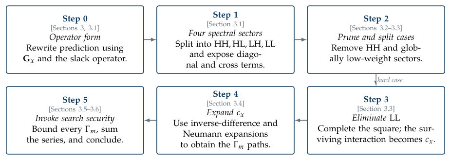
<figcaption class="paper-figure-caption"><b>Fig 3.</b> Figure 3: Flow of the proof. Steps 0–2 reformulate the prediction experiment and isolate the only hard case. Steps 3–5 use positivity of the LL block to turn the surviving interaction into common-challenge paths bounded by joint search security.</figcaption>
</figure>
</div>

<p><strong>Summary.</strong> This paper establishes a fundamental security relationship in quantum information theory by bounding the success probability of a common-challenge parity prediction task based on the success probability of local full-string recovery. Using advanced operator algebra and series expansions, the authors prove that if local measurements cannot reliably reconstruct the secret string, they also cannot reliably predict the shared parity challenge. This has direct implications for quantum cryptography.</p>
<p><strong>Why it may be interesting.</strong> This work provides a rigorous, information-theoretic link between two distinct quantum security primitives (search vs. decision), which is fundamental for designing secure quantum cryptographic protocols like unclonable encryption.</p>
<details>
<summary>Detailed structure</summary>
<p><strong>Main problem.</strong> The paper analyzes the non-local search-to-decision problem, determining the relationship between the ability of two noncommunicating parties to locally recover a shared secret string versus their ability to predict a common random parity challenge.</p>
<p><strong>Main result.</strong> It proves an information-theoretic upper bound showing that the joint parity-prediction probability is bounded by a function of the optimal local full-string recovery probability, implying that negligible local recovery limits joint prediction advantage.</p>
<p><strong>Method.</strong> The proof uses advanced techniques involving operator algebra, spectral decomposition, and Neumann series expansions to systematically bound complex expectation values related to quantum measurements.</p>
<p><strong>Model / system.</strong> The model involves encoding a uniformly random string $x \in \mathbb{F}_2^n$ into a bipartite quantum state $
ho_x$ shared between two parties. The security is analyzed via local measurements (POVMs) for both full-string recovery (search) and common-challenge parity prediction (decision).</p>
<p><strong>Key observables.</strong> Search success probability ($  ext{psrch}$), joint parity-prediction probability ($   ext{ppred}$), and various derived scalars like $c_x$ and $\Gamma_m$.</p>
<p><strong>Important parameters / regimes.</strong> The bound depends on the relationship between $ ext{ppred}$ and $   ext{psrch}$, with the final bound being $   ext{ppred} \le \min{1, 1/2 + 5 ext{psrch}^{1/22}}$.</p>
<p><strong>Assumptions / limitations.</strong> The proof is information-theoretic and does not yield an efficient extractor; it assumes the uniform prior on $x$ and identical challenges.</p>
<p><strong>Figures summary.</strong> Figure 1 illustrates the initial state encoding ($
ho_x$). Figure 2 compares the 'Search experiment' (full-string recovery) versus the 'Identical-challenge decision' (parity prediction). Figure 3 summarizes the multi-step logical flow of the proof, relating the prediction probability to the search security.</p>
<p><strong>Paper structure.</strong> The paper systematically reduces the prediction probability calculation by decomposing the state into spectral sectors, applying operator identities, utilizing the Neumann expansion to approximate inverses, and finally bounding the resulting error terms ($\Gamma_m$) using the initial assumption of search security ($ ext{psrch}$).</p>
</details>
<details>
<summary>Abstract</summary>
<p>Non-local search-to-decision asks whether two noncommunicating parties, given the two shares of a bipartite encoding of a uniformly random string $x\in \mathbb{F}_2^n$, can both predict the same random parity $\langle r,x\rangle$ without there also being local measurements with which both parties recover $x$. We prove that if their optimal probability of both recovering $x$ by local measurements is $p$, then their probability of both answering a common parity challenge correctly is at most $\min\{1,\frac{1}{2}+5p^{1/22}\}$. The result is motivated by applications to unclonable encryption and quantum copy-protection. The proof is information-theoretic and does not provide an efficient extractor. The proof and the exposition were developed with assistance from ChatGPT using GPT-5.6 Sol Pro and Codex in the Ultra reasoning mode.</p>
</details>
<p><sub><a href="#top">↑ back to top</a></sub></p>

<p><a id="paper-2608.18382"></a></p>
<h3 id="optical-voltage-profiling-of-2d-semiconductors-via-proximal-exciton-sensing"><a href="http://arxiv.org/abs/2608.18382v1">Optical Voltage Profiling of 2D Semiconductors via Proximal Exciton Sensing</a></h3>
<p><strong>Authors:</strong> Ha-Leem Kim, Hyungbin Lim, Yuanyi Yang, Ruishi Qi, Ruichen Xia, Can Uzundal, Takashi Taniguchi, Kenji Watanabe, Feng Wang<br>
<strong>Type:</strong> experiment · <strong>Category:</strong> strongly correlated electrons · <strong>PDF:</strong> <a href="https://arxiv.org/pdf/2608.18382v1">https://arxiv.org/pdf/2608.18382v1</a><br>
<strong>Analysis basis:</strong> full PDF text, analyzed in chunks
<strong>Topic relevance:</strong> <code>quantum measurements</code> <strong>3/5</strong></p>
<div class="figure-strip-hint">↔ Scroll figures horizontally</div>
<div class="paper-figures-scroll">
<figure class="paper-figure-card">
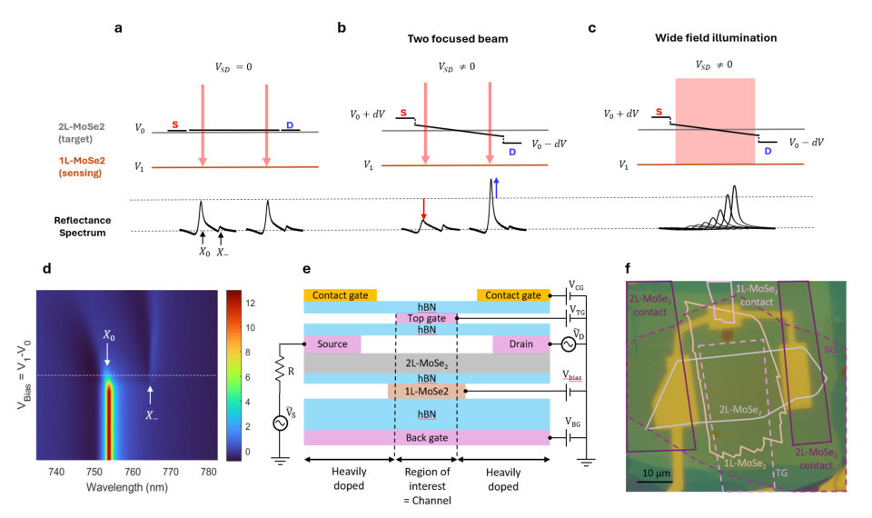
<figcaption class="paper-figure-caption"><b>Fig 1.</b> Fig. 1 | Optical voltage profiling: principle and device architecture. a, Zero-bias configuration (𝑉𝑉SD = 0) with the interlayer bias 𝑉𝑉bias = 𝑉𝑉1 −𝑉𝑉0 set for maximum responsivity of the 1L-MoSe₂ sensor. Focused beams (red arrows) probe discrete positions, analogous to voltage leads in a four-probe measurement. The 2L-MoSe₂ target electrostatically gates the sensor, modulating its carrier density and exciton resonance. b, Under finite source– drain bias (𝑉𝑉SD ≠ 0), current flows in the target. The potential distribution shows large drops near the contacts and a linear gradient in the channel. Local changes in the sensor’s exciton intensity (suppression or enhancement of 𝑋𝑋0 ) encode the...</figcaption>
</figure>
<figure class="paper-figure-card">
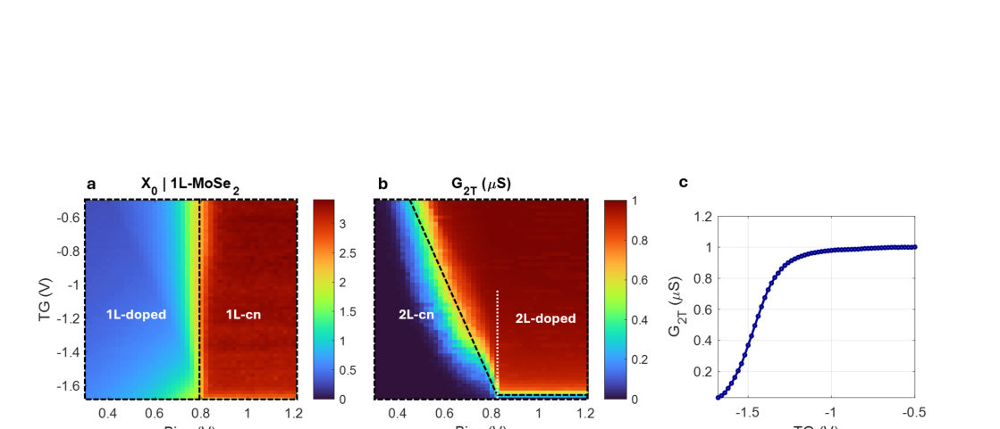
<figcaption class="paper-figure-caption"><b>Fig 2.</b> Fig. 2 | Gate-dependent doping in the sensor and target layer. a, 1L-MoSe₂ (sensor) exciton-intensity map as a function of top-gate voltage 𝑉𝑉𝑇𝑇𝑇𝑇 and interlayer bias 𝑉𝑉bias. High intensity marks the charge-neutral regime; low intensity marks the electron-doped regime. Back-gate and contact gates are fixed at high positive voltages to render the contact regions metallic. b, Two‑terminal conductance map G2T of the 2L-MoSe₂ (target) under a small AC bias (7.7 Hz, 10 mV). Regions of vanishing G2T indicate a charge-neutral regime, while a finite G2T indicates the electron-doped regime. c, Line cut along the white dashed trajectory in b, taken at Vbias = 0.81 V near the 1L sensor’s phase...</figcaption>
</figure>
<figure class="paper-figure-card">
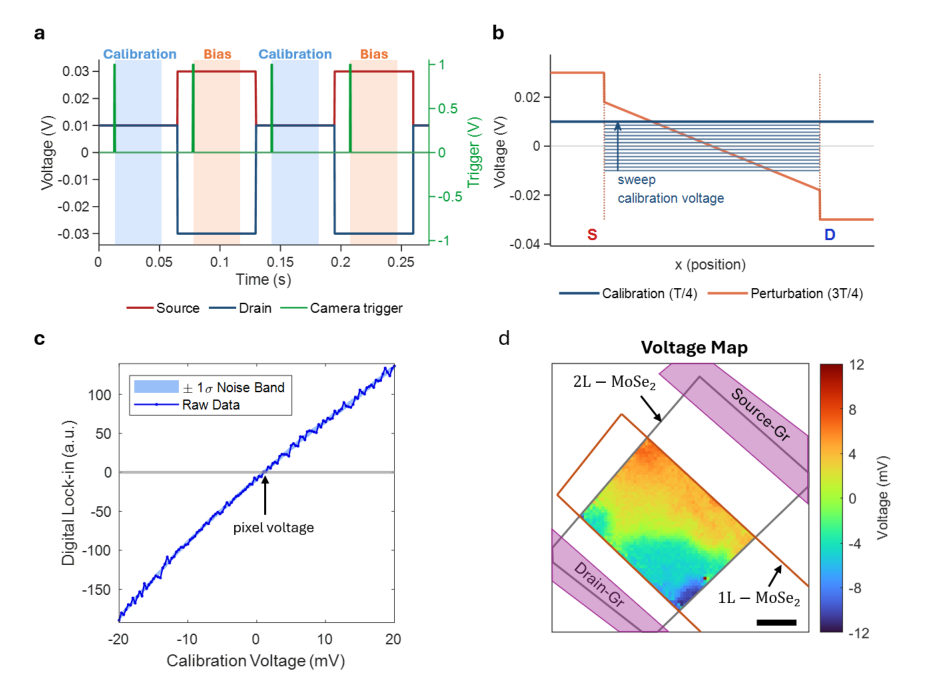
<figcaption class="paper-figure-caption"><b>Fig 3.</b> Fig. 3 | In situ calibration and reconstruction of spatial voltage maps. a, Time traces of the source (red) and drain (blue) voltages and the camera trigger (green) illustrating two phases per period: a calibration phase with 𝑉𝑉source = 𝑉𝑉drain = 𝑉𝑉cal (uniform potential; no source–drain current) and a biasing phase with a small differential bias (+30 mV at the source and −30 mV at the drain). One image is acquired in each phase and frames are averaged over multiple periods. The calibration voltage 𝑉𝑉cal is stepped within ±20 mV while the biasing amplitude is held fixed. b, Position-dependent potential 𝑉𝑉(𝑥𝑥) along the channel for several calibration voltages (blue) and for the biasing...</figcaption>
</figure>
<figure class="paper-figure-card">
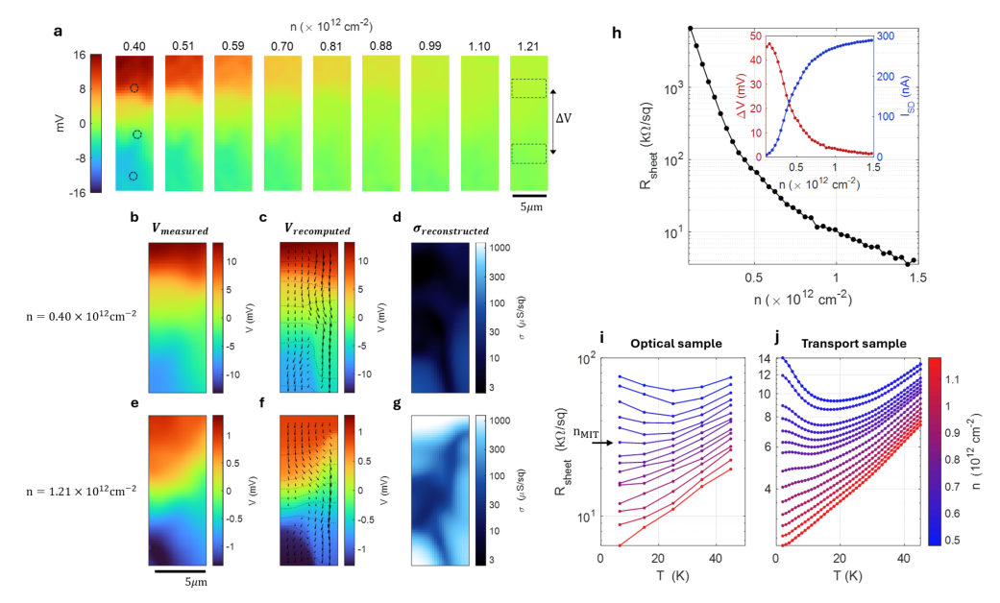
<figcaption class="paper-figure-caption"><b>Fig 4.</b> Fig. 4 | Density-dependent voltage maps, local conductivity, and resistance across the metal–insulator transition (MIT) in 2L-MoSe₂. a, Density-dependent spatial maps of the local electrostatic potential 𝑉𝑉(𝑥𝑥, 𝑦𝑦) for device DV2 measured at T = 6.5 K. Carrier densities (in units of 1012 cm−2) are indicated above each panel. Dashed circles mark bubbles formed during heterostructure transfer. The source–drain bias voltage is 60 mV, and the corresponding bias current is shown in the inset of h. b, e, Measured potential maps (Gaussian-smoothed) at carrier densities n = 0.40 × 1012 cm−2 (b) and n = 1.21 × 1012 cm−2 (e). c, f, Recomputed potential maps obtained from the inverted local...</figcaption>
</figure>
</div>

<p><strong>Summary.</strong> This work introduces Optical Voltage Profiling, a novel, noninvasive technique that uses an exciton sensor to map the local electrostatic potential across 2D semiconductors. By overcoming limitations imposed by high contact resistance, the authors successfully mapped the metal-insulator transition in bilayer MoSe2, providing spatially resolved evidence of electronic inhomogeneity in these correlated materials.</p>
<p><strong>Why it may be interesting.</strong> The ability to map local potentials and conductivities noninvasively provides unprecedented spatial resolution into transport mechanisms, which is crucial for understanding correlated electron behavior in nanoscale devices where local variations dominate macroscopic measurements.</p>
<details>
<summary>Detailed structure</summary>
<p><strong>Main problem.</strong> High contact resistances in atomically thin semiconductors obscure intrinsic electrical transport properties, especially when correlated electronic states emerge at low carrier densities.</p>
<p><strong>Main result.</strong> The authors successfully demonstrated a method to map local potentials and resolve channel resistances below 1 kΩ, revealing a metal-insulator crossover near the resistance quantum h/e^2.</p>
<p><strong>Method.</strong> They developed and applied 'Optical Voltage Profiling,' a noninvasive technique using a proximal exciton sensor to convert local electrostatic potential into measurable modulations of exciton reflectance.</p>
<p><strong>Model / system.</strong> The study uses two-dimensional (2D) semiconductors, specifically bilayer MoSe2 as the active channel and a monolayer MoSe2 as the exciton sensor, separated by hBN.</p>
<p><strong>Key observables.</strong> Spatially resolved two-dimensional voltage maps, local sheet conductivity $\sigma(x, y)$, and average channel resistance $R_{\square}$ as a function of carrier density.</p>
<p><strong>Important parameters / regimes.</strong> Carrier density ($n$), temperature ($T$), and the resistance quantum ($h/e^2$).</p>
<p><strong>Assumptions / limitations.</strong> The technique requires complex <em>in situ</em> calibration to account for the nonlinear and spatially varying conversion from local carrier density to exciton intensity, and conductivity reconstruction relies on solving an ill-posed inverse problem.</p>
<p><strong>Figures summary.</strong> Figures illustrate the experimental setup, the two-phase calibration process, and density-dependent spatial maps of potential and reconstructed conductivity across the metal-insulator transition in 2L-MoSe2.</p>
<p><strong>Paper structure.</strong> The paper introduces the problem of contact resistance, details the optical voltage profiling methodology (including calibration and inverse problem solving), presents results showing the MIT and spatial heterogeneity, and validates the findings against conventional four-probe measurements.</p>
</details>
<details>
<summary>Abstract</summary>
<p>High contact resistances in atomically thin semiconductors often mask intrinsic electrical transport properties, particularly at low carrier densities where exotic correlated states emerge. We introduce optical voltage profiling, a noninvasive wide-field technique that replaces local voltage probes with a proximal monolayer MoSe$_2$ exciton sensor. Isolated by thin hexagonal boron nitride, this sensor converts the target's local electrostatic potential into spatially resolved modulations of exciton reflectance. Through pixel-wise in situ calibration, these signals yield quantitative two-dimensional voltage maps of an actively biased semiconductor device. Using this method, we demonstrate the carrier-density-driven metal-insulator transition in bilayer MoSe$_2$ and obtain channel resistances below 1 k$Ω$ despite M$Ω$-scale two-terminal resistances in the metallic region. The optically derived resistance exhibits a metal-insulator crossover near the resistance quantum $h/e^2$, and the voltage maps and reconstructed local conductivity reveal pronounced spatial heterogeneity in both insulating and metallic regimes. Beyond resolving channel resistance under high contact-resistance conditions, the technique provides spatially resolved access to microscopic transport heterogeneity in functional van der Waals devices.</p>
</details>
<p><sub><a href="#top">↑ back to top</a></sub></p>

<p><a id="paper-2608.18273"></a></p>
<h3 id="pseudocontexts-forced-by-finite-context-hypergraphs"><a href="http://arxiv.org/abs/2608.18273v1">Pseudocontexts forced by finite context hypergraphs</a></h3>
<p><strong>Authors:</strong> Mirko Navara, Karl Svozil<br>
<strong>Type:</strong> theory · <strong>Category:</strong> other · <strong>PDF:</strong> <a href="https://arxiv.org/pdf/2608.18273v1">https://arxiv.org/pdf/2608.18273v1</a><br>
<strong>Analysis basis:</strong> full PDF text, analyzed in chunks
<strong>Topic relevance:</strong> <code>quantum measurements</code> <strong>3/5</strong></p>
<div class="figure-strip-hint">↔ Scroll figures horizontally</div>
<div class="paper-figures-scroll">
<figure class="paper-figure-card">
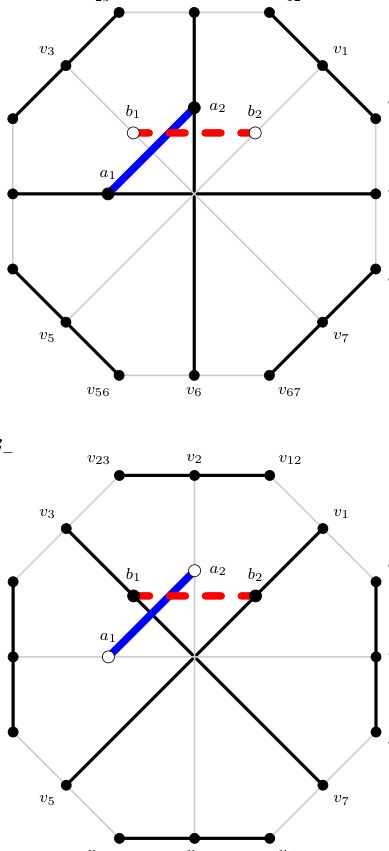
<figcaption class="paper-figure-caption"><b>Fig 1.</b> FIG. 1. The two context coverings used in the incidence-vector certificate. Bold black lines are the selected contexts and thin gray lines are the unselected contexts. Panel (a) shows G+ and panel (b) shows G−. In both panels, the very thick blue solid line joins A = {a1, a2} and the very thick red dashed line joins B = {b1, b2}. Filled inner vertices are covered by the respective covering.</figcaption>
</figure>
</div>

<p><strong>Summary.</strong> This paper develops the concept of 'pseudocontexts' to characterize probability equalities that are structurally forced by a finite set of measurement contexts, independent of whether the underlying physics is classical or quantum. It establishes a rigorous, algebraic test—the 'balanced context certificate'—to verify this forcing. The work provides sharp bounds on the minimum size of such structures, distinguishing between real and complex probability spaces.</p>
<p><strong>Why it may be interesting.</strong> This work provides a deep, purely mathematical characterization of constraints arising from measurement compatibility, which is fundamental to understanding contextuality in quantum mechanics, extending beyond standard Bell-type inequalities.</p>
<details>
<summary>Detailed structure</summary>
<p><strong>Main problem.</strong> To determine the necessary and sufficient conditions under which an equality between sums of probabilities derived from two disjoint sets of outcomes (pseudocontexts) is forced solely by the underlying structure of a finite context hypergraph, independent of the specific probability model.</p>
<p><strong>Main result.</strong> The equality is characterized by the existence of a 'balanced context certificate,' which provides a finite, algebraic test for the identity to hold across classical and quantum probability assignments.</p>
<p><strong>Method.</strong> The authors translate the probabilistic constraints into linear algebra problems using the incidence matrix of the context hypergraph, deriving necessary and sufficient conditions via rational vector analysis.</p>
<p><strong>Model / system.</strong> The framework uses a finite, uniform context hypergraph $\Gamma = (V, E)$, where $V$ are elementary propositions and $E$ are complete contexts. The concept is generalized to quantum systems via Faithful Orthogonal Representations (FORs).</p>
<p><strong>Key observables.</strong> The pseudocontext equality $\sum_{a \in A} p(a) = \sum_{b \in B} p(b)$, and the associated 'balanced context certificate' vector $\lambda$.</p>
<p><strong>Important parameters / regimes.</strong> The minimum size of the target groups ($k=2$ over $\mathbb{C}$, $k=3$ over $\mathbb{R}$), and the structure of the context hypergraph.</p>
<p><strong>Assumptions / limitations.</strong> The equality must hold for <em>every</em> admissible probability assignment, not just those from a specific physical model. The definition explicitly excludes elementary size-one identities.</p>
<p><strong>Figures summary.</strong> Figure 1 illustrates the two context coverings ($G^+$ and $G^-$) used in the incidence-vector certificate for the size-two pseudocontext.</p>
<p><strong>Paper structure.</strong> The paper establishes the definition of pseudocontexts, derives the finite forcing criterion using linear algebra, proves the independence of the equality from the chosen representation (FOR), and concludes by presenting concrete, minimal examples (15-vertex and 20-vertex hypergraphs) demonstrating the field-dependent minimum size.</p>
</details>
<details>
<summary>Abstract</summary>
<p>A context is a complete set of mutually exclusive outcomes whose probabilities sum to one. We define a pseudocontext as two disjoint groups, with no mutually exclusive pair within either group, whose total probabilities must nevertheless be equal solely because of how the contexts overlap. We give an exact finite test for this property and show that the equality is independent of the chosen coordinates and probability model. Applying the test in three dimensions, we obtain a 15-outcome real example with groups of three and a 20-outcome complex example with groups of two. Under this definition, the sharp minimum number of outcomes in each target group is two over the complex field and three over the real field.</p>
</details>
<p><sub><a href="#top">↑ back to top</a></sub></p>

<p><a id="paper-2608.18901"></a></p>
<h3 id="quantum-tensor-network-learning-with-dmrg"><a href="http://arxiv.org/abs/2608.18901v1">Quantum Tensor Network Learning with DMRG</a></h3>
<p><strong>Authors:</strong> Gustav J L Jäger, Martin B Plenio, Hans-Martin Rieser<br>
<strong>Type:</strong> theory · <strong>Category:</strong> numerical methods · <strong>PDF:</strong> <a href="https://arxiv.org/pdf/2608.18901v1">https://arxiv.org/pdf/2608.18901v1</a><br>
<strong>Analysis basis:</strong> full PDF text, analyzed in chunks
<strong>Topic relevance:</strong> <code>methods for driven-dissipative</code> <strong>3/5</strong></p>
<div class="figure-strip-hint">↔ Scroll figures horizontally</div>
<div class="paper-figures-scroll">
<figure class="paper-figure-card">
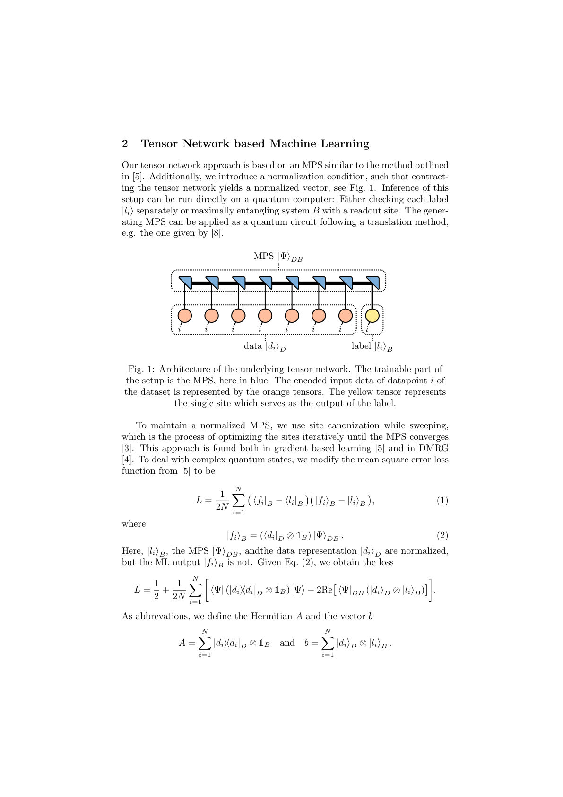
<figcaption class="paper-figure-caption"><b>Fig 1.</b> Low-resolution page preview, page 2</figcaption>
</figure>
<figure class="paper-figure-card">
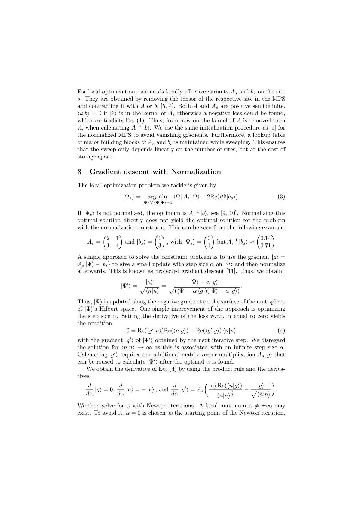
<figcaption class="paper-figure-caption"><b>Fig 2.</b> Low-resolution page preview, page 3</figcaption>
</figure>
<figure class="paper-figure-card">
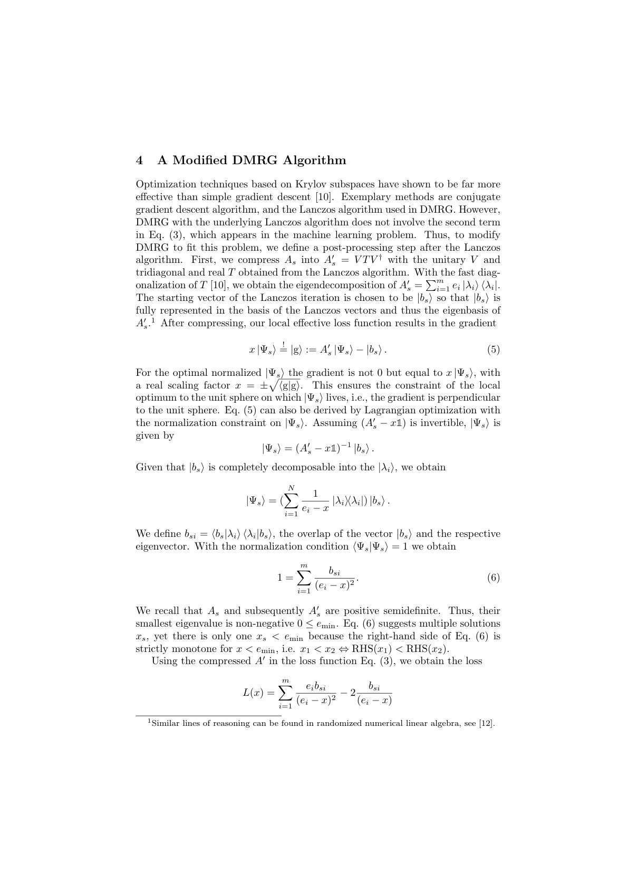
<figcaption class="paper-figure-caption"><b>Fig 3.</b> Low-resolution page preview, page 4</figcaption>
</figure>
<figure class="paper-figure-card">
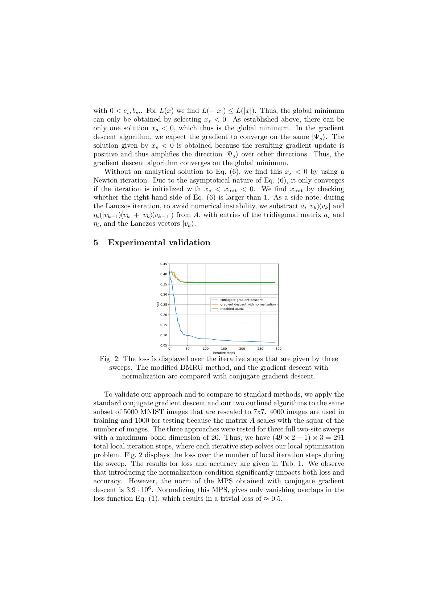
<figcaption class="paper-figure-caption"><b>Fig 4.</b> Low-resolution page preview, page 5</figcaption>
</figure>
<figure class="paper-figure-card">
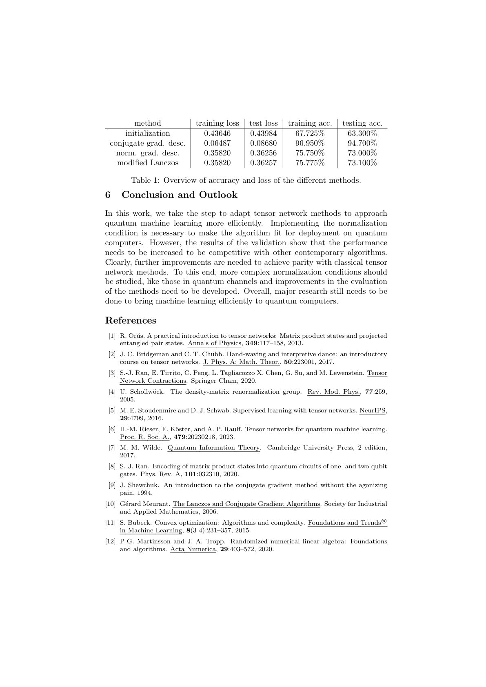
<figcaption class="paper-figure-caption"><b>Fig 5.</b> Low-resolution page preview, page 6</figcaption>
</figure>
</div>

<p><strong>Summary.</strong> This paper adapts Tensor Network methods, specifically using the MPS ansatz, for machine learning tasks by enforcing a global quantum normalization constraint. It compares gradient descent and a modified DMRG approach for optimizing the network parameters. The work shows that these quantum-inspired optimization techniques can achieve high accuracy on classical datasets, advancing the field of quantum machine learning.</p>
<p><strong>Why it may be interesting.</strong> It bridges the gap between advanced quantum simulation techniques (DMRG, TNs) and modern machine learning optimization, providing a concrete framework for quantum machine learning.</p>
<details>
<summary>Detailed structure</summary>
<p><strong>Main problem.</strong> The paper addresses the challenge of adapting Tensor Network (TN) methods, originally from quantum many-body physics, for use in classical machine learning by enforcing a global normalization condition.</p>
<p><strong>Main result.</strong> The modified DMRG approach achieves performance comparable to gradient descent methods, demonstrating that incorporating the normalization constraint significantly improves both the loss and accuracy of the learning process.</p>
<p><strong>Method.</strong> The authors compare two optimization techniques—gradient descent and an adaptation of DMRG—for optimizing the parameters of a Matrix Product State (MPS) ansatz.</p>
<p><strong>Model / system.</strong> The core model is an MPS ansatz used to represent a quantum state, which is then optimized using ML loss functions derived from data (e.g., MNIST dataset).</p>
<p><strong>Key observables.</strong> Loss function (L), training/testing accuracy, and the norm of the MPS.</p>
<p><strong>Important parameters / regimes.</strong> The step size $\alpha$ in gradient descent, and the bond dimension used in the MPS representation.</p>
<p><strong>Assumptions / limitations.</strong> The DMRG adaptation requires a post-processing step because the standard algorithm does not naturally incorporate the full ML loss function gradient term.</p>
<p><strong>Figures summary.</strong> Figure 1 illustrates the MPS architecture; Figure 2 compares the loss convergence over iterative steps for different optimization methods; Table 1 provides a quantitative comparison of accuracy and loss.</p>
<p><strong>Paper structure.</strong> The paper introduces the problem, details the mathematical formulation of the loss function and the two optimization methods (gradient descent and DMRG adaptation), presents quantitative comparisons in a table, and discusses the results and limitations.</p>
</details>
<details>
<summary>Abstract</summary>
<p>Tensor Networks are a relatively new machine learning approach. The architectures proposed initially are inspired by approaches from quantum many-body physics simulations. One common layout is the matrix product state (MPS) also known as a tensor train optimized with gradient descent techniques. We introduce a global normalization condition, so that the MPS represents a quantum state. We investigate two optimization methods that find the locally optimal tensors and compare them regarding their effectiveness. One is based on gradient descent and the other on an adaptation of DMRG.</p>
</details>
<p><sub><a href="#top">↑ back to top</a></sub></p>

<p><a id="paper-2608.18659"></a></p>
<h3 id="quantum-logic-tsetlin-machines-interpretable-quantum-machine-learning-with-commuting-projector-clauses"><a href="http://arxiv.org/abs/2608.18659v1">Quantum-Logic Tsetlin Machines: Interpretable Quantum Machine Learning with Commuting Projector Clauses</a></h3>
<p><strong>Authors:</strong> Krishna Bhatia<br>
<strong>Type:</strong> both · <strong>Category:</strong> quantum information and computing · <strong>PDF:</strong> <a href="https://arxiv.org/pdf/2608.18659v1">https://arxiv.org/pdf/2608.18659v1</a><br>
<strong>Analysis basis:</strong> full PDF text, analyzed in chunks
<strong>Topic relevance:</strong> <code>quantum measurements</code> <strong>3/5</strong></p>
<div class="figure-strip-hint">↔ Scroll figures horizontally</div>
<div class="paper-figures-scroll">
<figure class="paper-figure-card">
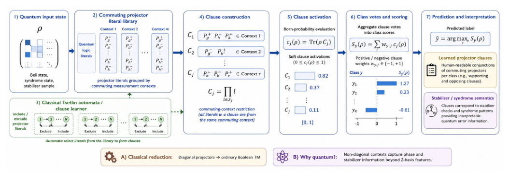
<figcaption class="paper-figure-caption"><b>Fig 1.</b> Fig. 1. QL-TM pipeline. A quantum state is evaluated through a library of commuting projector literals. Automata select literals into clauses, each clause produces a Born-probability activation, and class scores are formed from clause votes.</figcaption>
</figure>
<figure class="paper-figure-card">
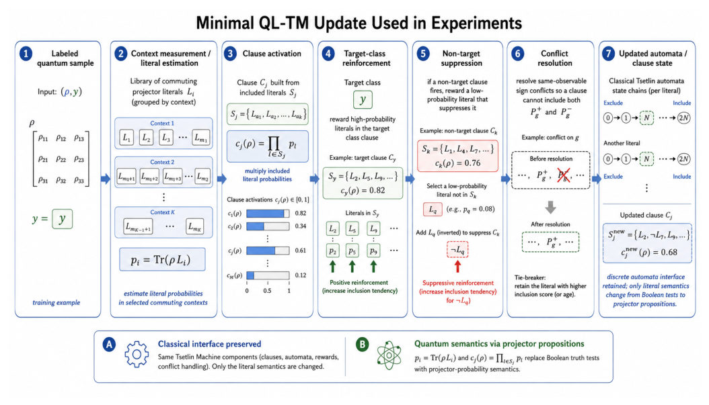
<figcaption class="paper-figure-caption"><b>Fig 2.</b> Fig. 2. Minimal QL-TM update used in the experiments. Classical finite-state include/exclude automata are retained while Boolean literal truth values are replaced by projector Born probabilities within commuting contexts.</figcaption>
</figure>
<figure class="paper-figure-card">
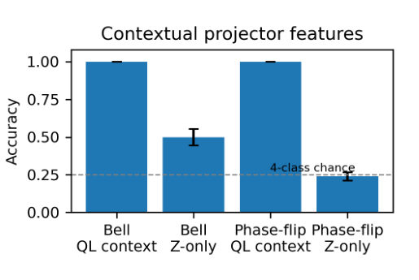
<figcaption class="paper-figure-caption"><b>Fig 3.</b> Fig. 3. Context advantage for TinyProjectorTsetlin. Non-diagonal QL contexts solve the tasks, while diagonal Z-only contexts lose the relevant phase/syndrome information.</figcaption>
</figure>
<figure class="paper-figure-card">

<figcaption class="paper-figure-caption"><b>Fig 4.</b> Fig. 4 and Table IV show the stronger randomized task. For k = 4, the classifier must distinguish 16 syndrome classes. The true QL context achieves 1.000 accuracy for n = 5 and n = 6, while wrong QL contexts remain near chance. Diagonal Z contexts sometimes extract weak accidental information but remain far below the true context. The representative random task clauses have the form</figcaption>
</figure>
<figure class="paper-figure-card">

<figcaption class="paper-figure-caption"><b>Fig 5.</b> Fig. 4. Random 16-class stabilizer tasks using TinyProjectorTsetlin. The correct QL context solves the task; wrong non-diagonal contexts remain at the chance level.</figcaption>
</figure>
</div>

<p><strong>Summary.</strong> This paper introduces the Quantum-Logic Tsetlin Machine (QL-TM), an interpretable quantum machine learning model that extends classical TMs to use quantum projectors. It demonstrates that by restricting clauses to commuting contexts, the QL-TM can successfully learn and classify quantum correlations, recovering physically meaningful information that is lost in simpler, diagonal measurements.</p>
<p><strong>Why it may be interesting.</strong> It provides a concrete, theoretically grounded framework for interpreting quantum correlations using established classical learning paradigms, bridging quantum logic structures (like stabilizer codes) with machine learning interpretability.</p>
<details>
<summary>Detailed structure</summary>
<p><strong>Main problem.</strong> To develop an interpretable quantum machine learning model that generalizes classical Tsetlin Machines (TMs) by replacing Boolean literals with quantum projectors.</p>
<p><strong>Main result.</strong> The Quantum-Logic Tsetlin Machine (QL-TM) successfully recovers physically meaningful quantum clauses, achieving high accuracy on tasks like Bell state classification, which fails when restricted to diagonal measurements.</p>
<p><strong>Method.</strong> The model uses a hybrid approach where classical finite-state automata select clauses, and clause activation is determined by the Born probability of the joint projector of quantum propositions.</p>
<p><strong>Model / system.</strong> The model operates on quantum states ($
ho$) on a finite-dimensional Hilbert space, using projectors ($P$) as literals and restricting clauses to commuting measurement contexts, linking the framework to stabilizer and syndrome semantics.</p>
<p><strong>Key observables.</strong> Clause activation probability ($   ext{Tr}(
ho C_j)$), classification accuracy, and performance degradation following the predicted $2^{b-k}$ separability ladder.</p>
<p><strong>Important parameters / regimes.</strong> Noise levels (depolarizing $p$), number of shots, and the context-budget ratio ($b$ vs $k$).</p>
<p><strong>Assumptions / limitations.</strong> The model is not a quantum Turing machine; the joint activation $    ext{Tr}(
ho igotimes L_i)$ is not guaranteed to equal the product of marginals, requiring a lightweight training surrogate.</p>
<p><strong>Figures summary.</strong> Figures illustrate the QL-TM pipeline, showing context advantage (non-diagonal vs. diagonal contexts), and demonstrating performance degradation following the predicted separability ladder.</p>
<p><strong>Paper structure.</strong> The paper introduces the QL-TM, proves its reduction to classical TMs in diagonal bases, and then validates its capability through controlled experiments on Bell states, phase-flip syndromes, and randomized stabilizer tasks under varying noise and context constraints.</p>
</details>
<details>
<summary>Abstract</summary>
<p>Tsetlin Machines (TMs) learn interpretable Boolean clauses using finite-state automata. We introduce the Quantum-Logic Tsetlin Machine (QL-TM), which replaces Boolean literals with quantum propositions represented by projectors while retaining classical include/exclude automata. Clauses are restricted to commuting measurement contexts and activate through the Born probability of their joint projector. We prove an exact reduction to ordinary Boolean TM clauses in diagonal computational-basis contexts and connect Pauli-projector clauses to stabilizer and syndrome semantics. Controlled experiments on Bell states, phase-flip syndromes, randomized 16-class stabilizer tasks, mixed literal pools, context-budget ablations, and finite-shot noise show that correct non-diagonal contexts recover physically meaningful clauses, while diagonal or wrong contexts lose the relevant phase/syndrome information. The context-budget results closely follow the predicted separability ladder 2^(b-k) as true stabilizer generators are removed. The contribution is a controlled bridge between Tsetlin clause learning and quantum logic, not a claim of quantum advantage.</p>
</details>
<p><sub><a href="#top">↑ back to top</a></sub></p>

<p><a id="paper-2608.18935"></a></p>
<h3 id="real-classical-shadows-with-noise"><a href="http://arxiv.org/abs/2608.18935v1">Real Classical Shadows with Noise</a></h3>
<p><strong>Authors:</strong> Atharva Hingane, Dax Enshan Koh<br>
<strong>Type:</strong> theory · <strong>Category:</strong> quantum information and computing · <strong>PDF:</strong> <a href="https://arxiv.org/pdf/2608.18935v1">https://arxiv.org/pdf/2608.18935v1</a><br>
<strong>Analysis basis:</strong> full PDF text, analyzed in chunks
<strong>Topic relevance:</strong> <code>quantum measurements</code> <strong>3/5</strong></p>
<div class="figure-strip-hint">↔ Scroll figures horizontally</div>
<div class="paper-figures-scroll">
<figure class="paper-figure-card">

<figcaption class="paper-figure-caption"><b>Fig 1.</b> Figure 1: Exact variance ratio VarU / VarO under depolarizing noise (p = 0.9) from (28)–(29), over 500 independent (ρ, O) instances per point: median (circles), interquartile and 5–95% bands. Observables are random symmetric matrices made traceless and normalized; states are random mixed. The ratio rises monotonically toward the noise-independent asymptote 2 (dashed) and concentrates with n. Triangles: medians for the observable distribution of [6]. Dotted: the depolarizing-parameter ratio (19). Diamonds: the ratio measured by simulating both protocols on one instance per n, with 95% confidence intervals; 2.5 × 105 shots per protocol for n ≤6 and 6.8 × 104 for n = 7, 8, the confidence...</figcaption>
</figure>
<figure class="paper-figure-card">

<figcaption class="paper-figure-caption"><b>Fig 2.</b> Figure 2: The median-of-means estimator of Corollary 3.9, run: measured Pr[|ˆo −tr(Oρ)| &gt; ε] against batch size N at fixed K = 8, for ε = 0.1, δ = 0.05, M = 1, n = 3 and the unit-2-norm transverse-field Ising energy; 1200 repetitions per point, the floor being zero observed failures. Dotted verticals mark the N the guarantee prescribes. The guarantee holds with wide margin and is loose by a factor of about 40 in N for both ensembles.</figcaption>
</figure>
<figure class="paper-figure-card">

<figcaption class="paper-figure-caption"><b>Fig 3.</b> Figure 3: Two statements of this Part, run rather than only derived (n = 3, 4 × 105 shots per point, 95% confidence intervals). Left: the noise-blind protocol of Remark 3.5, in which snapshots produced under Dn,p are post-processed with the noiseless inverse M−1 O,1. The measured ratio E[ˆoblind]/ tr(O0ρ) follows the predicted multiplicative bias (β −1)/(d −1) of (20), which for depolarizing noise is exactly p. Because the bias multiplies the signal rather than shifting it, the line passes through the origin and no amount of averaging removes it. Right: the same protocol post-processed correctly. The measured single-shot variance tracks (28) and rises monotonically as β falls from its...</figcaption>
</figure>
<figure class="paper-figure-card">

<figcaption class="paper-figure-caption"><b>Fig 4.</b> Figure 4: The depolarizing parameter f(E) = 2(β−1) (d−1)(d+2) for all five noise models of Section 3.4 (n = 3), against the noiseless value f(1) = 2/(d + 2) (dotted). Because dephasing is diagonal-preserving, β = d at every strength and f is flat at f(1). Readout bit-flip at rate q has β = d(1 −q)n, which vanishes to β = 1 at q = 1</figcaption>
</figure>
<figure class="paper-figure-card">

<figcaption class="paper-figure-caption"><b>Fig 5.</b> Figure 5: Local Pauli shadow seminorm under single-qubit depolarizing noise (p = 0.9). Left: the orthogonal (2f 2 1 )−wt of (57) and the unitary (3f 2 1,U)−wt (lines) against the measured single-shot second moment at n = 6 (markers, 95% CI). The prediction is exact rather than an upper bound, because at d = 2 the contracted third moment is a multiple of the identity (for a real basis this is the computation Rj = 1</figcaption>
</figure>
</div>

<p><strong>Summary.</strong> This paper provides a comprehensive theory for the real classical shadows protocol under realistic noise models. It derives exact formulas for the single-shot variance using advanced group theory techniques. The key finding is that the protocol's theoretical advantages are robust and remain intact even when significant noise is present.</p>
<p><strong>Why it may be interesting.</strong> It provides rigorous, noise-resilient bounds for quantum state estimation protocols, which is crucial for designing practical quantum measurements on noisy hardware.</p>
<details>
<summary>Detailed structure</summary>
<p><strong>Main problem.</strong> To develop a complete theoretical understanding of the 'real classical shadows protocol' when the underlying quantum evolution is corrupted by a known, completely positive trace-preserving (CPTP) noise channel.</p>
<p><strong>Main result.</strong> The protocol maintains its theoretical sample-complexity advantages under noise, showing that the factor-of-two advantage for global observables is uniform in the noise for large observables.</p>
<p><strong>Method.</strong> The analysis utilizes the Weingarten calculus of the orthogonal group and the Brauer algebra to derive the exact single-shot variance and shadow seminorm for the noisy orthogonal shadow channels.</p>
<p><strong>Model / system.</strong> The study concerns quantum state estimation using the real classical shadows protocol, which employs the orthogonal (real Clifford) ensemble instead of the standard unitary ensemble. The noise is modeled by a known CPTP channel acting after the orthogonal evolution.</p>
<p><strong>Key observables.</strong> Single-shot variance, shadow seminorm, and the sample-complexity bound ($N_{tot}$).</p>
<p><strong>Important parameters / regimes.</strong> The noise channel $E$, the dimension $d$, and the dimensionless parameter $eta$ characterizing the noise impact.</p>
<p><strong>Assumptions / limitations.</strong> The noise channel $E$ is known in advance, and the analysis relies on the orthogonal group structure.</p>
<p><strong>Paper structure.</strong> The paper builds theory in modular parts, analyzing global and local measurements separately, and treating complex bases via a reality parameter, culminating in the derivation of exact variance formulas.</p>
</details>
<details>
<summary>Abstract</summary>
<p>The real classical shadows protocol of West et al. replaces the unitary (Clifford) ensemble of the Huang--Kueng--Preskill scheme by the orthogonal (real Clifford) ensemble, and for symmetric observables achieves strictly smaller estimator variances: a factor approaching two for global evolution and an exponential factor $(3/2)^k$ for $k$-local real Pauli observables. Real hardware, however, never implements the ideal evolution. Building on the noisy classical shadows framework of Koh and Grewal, we give a complete theory of the real classical shadows protocol in the presence of a known completely positive trace-preserving noise channel acting after the orthogonal evolution. We derive the noisy global and local orthogonal shadow channels from first principles using the Weingarten calculus of the orthogonal group, prove that each is a depolarizing channel acting on the symmetric (respectively locally symmetric) component of its input, and derive from it the exact single-shot variance in closed form, together with the associated shadow seminorm, two-sided bounds on it, and the resulting sample-complexity guarantees. We prove that the noiseless sample-complexity advantages survive intact under noise. Because the variances are exact rather than bounded, the ratio is controlled by a single dimensionless parameter, which gives a closed-form criterion for when the factor of two is attainable: both the second-moment and the variance ratio reach it exactly when the observable's norm profile grows, and the noise enters that limit only through a factor lying within $2/(d+2)$ of two, so the advantage is uniform in the noise. For rank-one targets it is provably unattainable, saturating strictly below two. The local real-Pauli advantage remains $(3/2)^k$. We treat complex measurement bases through a reality parameter and a transposed-noise scalar, recovering unitary shadows in the appropriate limit.</p>
</details>
<p><sub><a href="#top">↑ back to top</a></sub></p>

<p><a id="paper-2608.18961"></a></p>
<h3 id="subsystem-symmetries-and-fracton-models-in-quantum-error-correction"><a href="http://arxiv.org/abs/2608.18961v1">Subsystem Symmetries and Fracton Models in Quantum Error Correction</a></h3>
<p><strong>Authors:</strong> Giovanni Canossa<br>
<strong>Type:</strong> theory · <strong>Category:</strong> quantum information and computing · <strong>PDF:</strong> <a href="https://arxiv.org/pdf/2608.18961v1">https://arxiv.org/pdf/2608.18961v1</a><br>
<strong>Analysis basis:</strong> full PDF text, analyzed in chunks
<strong>Topic relevance:</strong> <code>analog quantum simulation</code> <strong>3/5</strong></p>
<div class="figure-strip-hint">↔ Scroll figures horizontally</div>
<div class="paper-figures-scroll">
<figure class="paper-figure-card">

<figcaption class="paper-figure-caption"><b>Fig 1.</b> Figure 2.1: Illustration of the FCC unit cell of the Tetrahedral Ising model. Blue and cyan circles represent vertices v = (𝑥, 𝑦, 𝑧) ∈(2Z)3 and face centers of an FCC lattice, respectively. The red and green tetrahedra show an example of the Î a 𝑆v+a and Î a 𝑆v−a interaction terms, respectively, where a ∈{(0, 0, 0), (1, 1, 0), (1, 0, 1), (0, 1, 1)} labels the four FCC sublattices. The entire lattice can be intuitively visualized with small cubes: Each shaded (empty) cube contains a single red (green) tetrahedron interaction. (b–d) Representative planar subsystem symmetries acting on 𝑋𝑌, 𝑌𝑍and 𝑋𝑍planes respectively. In each case, spins within a given plane are flipped collectively while...</figcaption>
</figure>
<figure class="paper-figure-card">

<figcaption class="paper-figure-caption"><b>Fig 2.</b> Figure 2.2: (a) Unit cell of the Fractal Ising model on a simple cubic lattice. Spins (blue spheres) reside on the lattice vertices at positions v = (𝑥, 𝑦, 𝑧) ∈Z3. The red and green tetrahedra represent the nearest-neighboring and next-nearest-neighboring interaction terms Î a1 𝑠v+a1 and Î a2 𝑠v+a2, respectively, with a1 ∈{(0, 0, 0), (1, 0, 0), (0, 1, 0), (0, 0, 1)} and a2 ∈{(0, 0, 0), (1, 1, 0), (1, 0, 1), (0, 1, 1)}. The model exhibits a subextensive number of fractal subsystem symmetries. (b-g) Pattern of spin-flips associated with a representative fractal symmetry operator 𝑋( 𝑓) corresponding to (𝑐0, 𝑐1) = (1, 1) in a periodic system of linear size 𝐿= 128. The flipped spins (black...</figcaption>
</figure>
<figure class="paper-figure-card">

<figcaption class="paper-figure-caption"><b>Fig 3.</b> Figure 2.3: Example of the flat energy histograms at the estimated transition point obtained through the multicanonical simulation of the Tetrahedral Ising model. The flat distribution denotes the system’s ability to visit mixed-phase configurations, thus facilitating the exploration of both phases and overcoming supercritical slowing down. From these results, the canonical reweighted distribution can then be derived.</figcaption>
</figure>
<figure class="paper-figure-card">

<figcaption class="paper-figure-caption"><b>Fig 4.</b> Figure 2.4: Behavior of the order parameters of the TIM (left) and FIM (right) as a function of temperature for different system sizes 𝐿. In both models, the order parameter exhibits an abrupt jump to its low-temperature saturation value just below the respective transition temperature, reflecting the strongly first-order character of the transition. For the FIM, saturation of the fractal order parameter is observed only for system sizes belonging to the 𝐿= 2𝑛family, which support non-trivial fractal subsystem symmetries. Other lattice sizes either display only trivial global ordering or remain effectively disordered within the accessible system sizes.</figcaption>
</figure>
<figure class="paper-figure-card">

<figcaption class="paper-figure-caption"><b>Fig 5.</b> Figure 2.5: Energy histograms (left column) and Binder cumulants (right column) for TIM (first row) and FIM (second row), computed with multicanonical simulations in the proximity of the phase transitions. The behavior of the dips in the Binder cumulants and the double peaks in the energy histograms for growing lattice sizes confirm the presence of a strong first-order phase transition in both models.</figcaption>
</figure>
</div>

<p><strong>Summary.</strong> This paper explores how symmetries present in classical statistical models, specifically 3D Ising models, can be leveraged to construct novel quantum error-correcting codes known as fracton codes. By analyzing the connection between subsystem symmetries and topological order, the authors establish these codes as highly resilient candidates for quantum memories. The work provides a powerful statistical-mechanical framework for designing robust quantum information protocols.</p>
<p><strong>Why it may be interesting.</strong> It bridges concepts from condensed matter (topological order, Ising models) directly into quantum information theory (QEC), providing a physical mechanism (subsystem symmetries) for generating highly robust quantum codes.</p>
<details>
<summary>Detailed structure</summary>
<p><strong>Main problem.</strong> The central challenge is developing new quantum error-correcting codes and understanding their error resilience for robust quantum memories.</p>
<p><strong>Main result.</strong> The study establishes fracton codes as highly resilient candidates for quantum memories, determining the optimal code-capacity threshold for the Checkerboard code to be 0.107(3).</p>
<p><strong>Method.</strong> The research uses a statistical-mechanical mapping that connects classical Ising models with subsystem symmetries to the construction and analysis of quantum error-correcting codes.</p>
<p><strong>Model / system.</strong> The work investigates the interplay between classical Ising models (specifically 3D self-dual models like Tetrahedral and Fractal Ising models) and quantum error correction via subsystem symmetries and fracton topological order.</p>
<p><strong>Key observables.</strong> Optimal code-capacity threshold, thermal behavior, and the structure of logical operators in the resulting fracton codes.</p>
<p><strong>Important parameters / regimes.</strong> The optimal error threshold (e.g., 0.107(3)), and the dimensionality (3D) of the studied models.</p>
<p><strong>Assumptions / limitations.</strong> The analysis relies on the statistical-mechanical framework and its predictions regarding generalized entropy relations for dual classical spin models.</p>
<p><strong>Figures summary.</strong> Not specified, but the notes mention figures related to phase transitions, order parameters, and energy histograms from the underlying simulation work.</p>
<p><strong>Paper structure.</strong> The thesis progresses logically from studying classical spin models with subsystem symmetries, to deriving the associated fracton phases, and finally applying these findings to quantify the error-correcting performance of the resulting codes.</p>
</details>
<details>
<summary>Abstract</summary>
<p>Constructing new quantum codes and understanding their error resilience are central challenges in the development of robust quantum memories. Topological codes are particularly promising due to their favorable error-correcting properties and their connections to phases of matter in many-body physics. In this thesis, we explore the interplay between classical Ising models and quantum error correction through subsystem symmetries, fracton topological order, and Kramers-Wannier-type duality. We study two three-dimensional classical self-dual Ising models with subsystem symmetries, the Tetrahedral Ising model and the Fractal Ising model, investigating their thermal behavior, their relation to fracton phases through subsystem-symmetry gauging, and the properties of the resulting fracton codes. Using a statistical-mechanical mapping, we determine the optimal code-capacity threshold of the Checkerboard code to be $0.107(3)$, which saturates the theoretical limit for CSS codes and represents the highest optimal error threshold among known three-dimensional codes. We relate this saturation to a generalized entropy relation for classical spin models satisfying a Kramers-Wannier-type duality, and argue how this prediction extends to CSS codes with zero encoding rate whose $X$- and $Z$-noise models map to classically dual spin models. These findings establish fracton codes as highly resilient candidates for quantum memories and demonstrate the power of the statistical-mechanical framework, together with its duality predictions, in analyzing and constructing robust quantum error-correcting codes.</p>
</details>
<p><sub><a href="#top">↑ back to top</a></sub></p>

<p><a id="paper-2608.18223"></a></p>
<h3 id="symmetric-math292math-telecloning-and-remote-quantum-state-inference"><a href="http://arxiv.org/abs/2608.18223v1">Symmetric $N \to M$ telecloning and remote quantum state inference</a></h3>
<p><strong>Authors:</strong> Adam G. Hawkins, Hannah McAleese, Hyukjoon Kwon<br>
<strong>Type:</strong> theory · <strong>Category:</strong> quantum information and computing · <strong>PDF:</strong> <a href="https://arxiv.org/pdf/2608.18223v1">https://arxiv.org/pdf/2608.18223v1</a><br>
<strong>Analysis basis:</strong> full PDF text, analyzed in chunks
<strong>Topic relevance:</strong> <code>quantum measurements</code> <strong>3/5</strong></p>
<div class="figure-strip-hint">↔ Scroll figures horizontally</div>
<div class="paper-figures-scroll">
<figure class="paper-figure-card">

<figcaption class="paper-figure-caption"><b>Fig 1.</b> FIG. 1. Entanglement structure in the |ψT⟩state for the M = 3 protocol [21]. The presence of two-qubit entanglement is indi- cated by a solid black line between nodes. Left: Alice’s sys- tem PA is shown on the left-hand side, while the receivers C are pictured on the right-hand side. Right: To emphasize the permutation-invariance of the qubits within |ψT⟩, we display an alternative arrangement with a different qubit chosen as the port. For any choice of P, the qubits on the other side of the diagram become the receivers.</figcaption>
</figure>
<figure class="paper-figure-card">

<figcaption class="paper-figure-caption"><b>Fig 2.</b> FIG. 2. Diagrammatic representation of the 3 →4 telecloning protocol. A red dashed line represents a BSM. After the first BSM, LOCC needs to be performed on each qubit in system AC according to Table I to ensure unit success probability. For the kth successful BSM, the resulting fidelity will be γ(k, 4).</figcaption>
</figure>
<figure class="paper-figure-card">

<figcaption class="paper-figure-caption"><b>Fig 3.</b> FIG. 3. Heatmaps showing the |φ⟩X-dependent probability and fidelity functions — as a function of the Bloch variables — when the kth BSM outcome is Φ−</figcaption>
</figure>
<figure class="paper-figure-card">

<figcaption class="paper-figure-caption"><b>Fig 4.</b> FIG. 4. The KL divergence (in bits) plotted against k. This is shown for uniformly random input states [DΠ KL(k)] and equal probability of each of the six Pauli eigenstates [DΠ KL,d(k)].</figcaption>
</figure>
<figure class="paper-figure-card">

<figcaption class="paper-figure-caption"><b>Fig 5.</b> FIG. 5. A re-working of Fig. 1 to show the necessary entan- glement structure in the ρP AC state for the 1 →3 protocol. The presence of necessary pairwise entanglement is shown by solid red lines between nodes, while unnecessary pairwise en- tanglement is indicated by a dashed black line. The symmetric nature of the resource is again exemplified by the freedom of choice of P.</figcaption>
</figure>
</div>

<p><strong>Summary.</strong> This paper presents a new, resource-efficient protocol for telecloning an unknown quantum state across multiple distant receivers ($M$). By using only sequential Bell state measurements, it achieves high fidelity independent of the number of receivers. Furthermore, it rigorously analyzes how receivers can still gain significant information about the state even if the direct cloning fidelity is imperfect.</p>
<p><strong>Why it may be interesting.</strong> The focus on resource efficiency (avoiding global POVMs) and the detailed analysis of information retention even when the primary cloning fidelity is sub-optimal is highly relevant to practical quantum network design and quantum communication protocols.</p>
<details>
<summary>Detailed structure</summary>
<p><strong>Main problem.</strong> The paper investigates the feasibility and performance of symmetric $N 	o M$ telecloning, extending quantum state teleportation to multiple receivers ($M \ge N$) using $N$ copies of an unknown state.</p>
<p><strong>Main result.</strong> A novel protocol using only sequential Bell state measurements (BSMs) achieves a fidelity that saturates the no-cloning bound, and the success probability is independent of the number of receivers $M$.</p>
<p><strong>Method.</strong> The authors develop a probabilistic protocol based on sequential BSMs, mathematically analyzing the resulting state fidelity, success probabilities, and the information gain from unsuccessful measurements.</p>
<p><strong>Model / system.</strong> The system involves teleporting an unknown quantum state $|\varphi
angle_X$ across a network to $M$ spatially separated receivers, utilizing $N$ copies of the state and auxiliary qubits.</p>
<p><strong>Key observables.</strong> Fidelity of the reduced state ($\gamma(N, M)$), success probability ($p_k$), and the level of remote quantum state inference confidence.</p>
<p><strong>Important parameters / regimes.</strong> The number of copies ($N$), the number of receivers ($M$), and the number of successful/unsuccessful BSM outcomes ($k, 
u$).</p>
<p><strong>Assumptions / limitations.</strong> The protocol is probabilistic, and the analysis relies on postselection on specific BSM outcomes.</p>
<p><strong>Figures summary.</strong> Figures illustrate the entanglement structure for $M=3$ and provide heatmaps comparing probability and fidelity functions for different BSM outcomes ($\Psi_\pm$).</p>
<p><strong>Paper structure.</strong> The paper progresses from introducing the problem and comparing it to global POVM methods, to detailing the sequential BSM protocol, proving its covariance and fidelity bounds, and finally analyzing the state-dependent outcomes resulting from unsuccessful measurements using difference operators.</p>
</details>
<details>
<summary>Abstract</summary>
<p>Teleporting unknown quantum states between distant nodes of a network is a significant feature of quantum communication. Few studies, however, have been conducted on $N \to M$ telecloning, in which $N$ copies of an unknown quantum state are optimally teleported to $M \geq N$ receivers. Previous work requires global POVMs on all copies and auxiliaries; here, we show that symmetric $N \to M$ telecloning can be probabilistically performed using only sequential (or parallel) Bell state measurements (BSMs), allowing the copies to be spatially separated. When successful, the fidelity of each receiver's reduced state saturates the bound imposed by the no-cloning theorem, with the probability of success being independent of $M$. In the case of an `unsuccessful' BSM, we show that the teleportation fidelity is likely to remain high, with the measurement outcome also providing information about the closest Pauli eigenbasis to the unknown state being telecloned. In this sense, each receiver can remotely infer the unknown quantum state with a level of confidence that scales with the number of copies, even if the fidelity of their own reduced state is sub-optimal. We additionally analyze the required resources to ensure the classical-communication fidelity bound is surpassed, both in terms of two-qubit inseparability and varying classes of multipartite entanglement. Surprisingly, we uncover that, at a given iteration of the protocol, pairwise entanglement is not always necessary to increase the teleportation fidelity and is never required to beat the classical bound for $N \geq 2$.</p>
</details>
<p><sub><a href="#top">↑ back to top</a></sub></p>

<p><a id="paper-2608.18800"></a></p>
<h3 id="interior-skin-focusing-and-directional-mirror-transfer-in-a-graded-non-hermitian-krawtchouk-network"><a href="http://arxiv.org/abs/2608.18800v1">Interior skin focusing and directional mirror transfer in a graded non-Hermitian Krawtchouk network</a></h3>
<p><strong>Authors:</strong> Y. S. Liu, X. Z. Zhang<br>
<strong>Type:</strong> theory · <strong>Category:</strong> disordered systems and neural networks · <strong>PDF:</strong> <a href="https://arxiv.org/pdf/2608.18800v1">https://arxiv.org/pdf/2608.18800v1</a><br>
<strong>Analysis basis:</strong> full PDF text, analyzed in chunks
<strong>Topic relevance:</strong> <code>analog quantum simulation</code> <strong>2/5</strong> · <code>correlated / nonlocal dissipation</code> <strong>2/5</strong> · <code>driven-dissipative phase transition</code> <strong>2/5</strong> · <code>methods for driven-dissipative</code> <strong>2/5</strong> · <code>non-equilibrium universality</code> <strong>2/5</strong> · <code>Keldysh / 2PI / non-Gaussian methods</code> <strong>1/5</strong> · <code>interference shaping light</code> <strong>1/5</strong></p>
<div class="figure-strip-hint">↔ Scroll figures horizontally</div>
<div class="paper-figures-scroll">
<figure class="paper-figure-card">

<figcaption class="paper-figure-caption"><b>Fig 1.</b> FIG. 1. Graded imaginary gauge field and the resulting similarity structure. (a) Directed hoppings and γj for N = 24 and r = 1.2, which lies in the finite-chain focusing regime; jγ = Np = 13.09 marks the sign change. The inset schematically depicts the Hamiltonian in Eq. (1) for a nonreciprocal graded hopping chain, with orange and blue arrows denoting the rightward hopping amplitude vj = α2(N −j) and the leftward hopping amplitude uj = α1j, respectively. (b) Normalized envelopes ϖj. For r = 1.2, the line styles mark jγ = 13.09, jc = 13.55, and the discrete maximizer jmax = 14. (c) Canonical basis-integrated weights Wcan R = s2 j, Wcan L = s−2 j , and Wbio = 1, plotted as log10 W. The...</figcaption>
</figure>
<figure class="paper-figure-card">

<figcaption class="paper-figure-caption"><b>Fig 2.</b> FIG. 2. Mode-resolved eigenvector structure for N = 24. (a,b) Euclidean-normalized right and left densities at r = 1.2 for three modes; panel (b) uses a logarithmic y axis. (c) Biorthogonal density ρbio µ (j) = |ϕµ(j)|2. (d) Rescaling-invariant Petermann factor Kµ for the displayed values of r, shown on a logarithmic y axis. Colors identify the modes in panels (a)-(c), and line styles identify r in panel (d). In panels (a)-(c), the orange line overlaps with the blue line.</figcaption>
</figure>
<figure class="paper-figure-card">

<figcaption class="paper-figure-caption"><b>Fig 3.</b> FIG. 3. Direction-selective mirror dynamics in the same N = 24, r = 1.2 open network. (a) Node distribution Pj(t; 5). (b) Reverse distribution Pj(t; 20). The two heat maps are independently normalized according to Eq. (28); they show routing but not gain. Gain information is retained in panel (c), which shows the raw mirror intensities from direct matrix exponentiation, analytic Wigner-d samples, and filled markers at t = t0. (d) Exact mirror gain Gj = rN+1−2j and direct numerical values. The inset shows the reciprocal-product residual |GjG¯j −1|.</figcaption>
</figure>
<figure class="paper-figure-card">

<figcaption class="paper-figure-caption"><b>Fig 4.</b> FIG. 4. Clean Green-function response for N = 24, r = 1.2, j = 5, ¯j = 20, and κ = 0.12g. (a) Directional intensities |G20,5(E + iκ)|2 and |G5,20(E + iκ)|2 on a logarithmic scale. Their resonances occur at the same pole positions. The inset shows the residual CG(E) −Cexact G , where Cexact G = 2(N + 1 −2j) ln r. (b) Absolute residues in the two directions on a single logarithmic y axis. The inset shows their mode-independent ratio |R(µ) 20,5|/|R(µ) 5,20| = rN+1−2j.</figcaption>
</figure>
<figure class="paper-figure-card">

<figcaption class="paper-figure-caption"><b>Fig 5.</b> FIG. 5. Finite-disorder response for N = 24, r = 1.2, and j0 = 5. The common horizontal variable W denotes Wϵ for onsite disorder and Wh for relative hopping disorder. (a) Optimized routing fidelity Fopt. (b) Log-gain deviation ∆G, with Gopt evaluated at the same t∗that maximizes F. (c) Empirical ladder distortion ∆ladder. (d) Green-contrast deviation ∆CG at E = 0 and κ = 0.12g; values below 10−14 are shown at the numerical floor. Curves are medians and shaded regions are interquartile intervals from 500 fixed-seed realizations. Propagation uses direct matrix exponentiation, and eigenvalues are assigned optimally to the clean ladder before fitting.</figcaption>
</figure>
</div>

<p><strong>Summary.</strong> This paper analyzes a graded non-Hermitian Krawtchouk network to determine the conditions under which localized boundary effects (skin) can coexist with a perfectly regular, commensurate energy spectrum. By mapping the system to a Hermitian partner, the authors derive an exactly solvable model showing an interior focus scaling as $\sqrt{N}$. This framework is valuable for designing quantum systems with controlled, directional response and robust spectral properties.</p>
<p><strong>Why it may be interesting.</strong> The work provides an exactly solvable, analytically controlled framework for understanding how engineered non-Hermiticity can maintain spectral regularity and directional coherence despite complex boundary effects, which is highly relevant for designing robust quantum simulators or optical circuits.</p>
<details>
<summary>Detailed structure</summary>
<p><strong>Main problem.</strong> The study investigates the coexistence of an interior skin profile with a real commensurate spectrum, exact finite-time transfer, and analytic frequency-domain response in a finite non-Hermitian network.</p>
<p><strong>Main result.</strong> The graded structure yields an exactly solvable framework demonstrating an interior focus scaling as $\sqrt{N}$, linking localization geometry to commensurate spectra and directional response.</p>
<p><strong>Method.</strong> The authors utilize a transformation to a Hermitian partner via a positive diagonal similarity map, analyzing spectral properties, directional propagators, and disorder effects.</p>
<p><strong>Model / system.</strong> The model is a finite open Krawtchouk network with oppositely graded directed hoppings, described by a non-Hermitian Hamiltonian $H_{OBC}$.</p>
<p><strong>Key observables.</strong> Spectral half-width $B(r)$, conditioning curve $\log_{10} \kappa_S$, directional gain ratios, and the Petermann factor $K_\mu$.</p>
<p><strong>Important parameters / regimes.</strong> System size $N$, grading parameters $\alpha_1, \alpha_2$, and disorder strengths.</p>
<p><strong>Assumptions / limitations.</strong> The analysis relies on the existence of a positive diagonal metric $\eta$ for pseudo-Hermiticity, and the comparison is made against the clean Krawtchouk map.</p>
<p><strong>Figures summary.</strong> Figures illustrate the graded gauge field, the similarity structure, mode-resolved eigenvector densities, and the approach to the one-way exceptional point by comparing spectral width and conditioning curves.</p>
<p><strong>Paper structure.</strong> The paper progresses from establishing the graded structure and its link to a Hermitian partner, to analyzing directional dynamics and disorder robustness, and finally detailing the approach to the exceptional point using advanced asymptotic analysis.</p>
</details>
<details>
<summary>Abstract</summary>
<p>Spatially graded nonreciprocity can move skin weight away from a boundary, but it does not generally preserve a real commensurate spectrum or analytically controlled dynamics. We study a finite open Krawtchouk network with oppositely graded directed hoppings. For a broad intermediate range of asymmetries, their local imaginary gauge field changes sign in the bulk, and its accumulated coordinate generates a positive diagonal similarity map whose normalized squared entries form a biased-binomial envelope. The same map converts the open chain into the spin-rotation generator \(2gJ_x\), so the focus and equally spaced spectrum follow from one grading. In this focusing regime, exact right, left, and biorthogonal eigenvectors show that the envelope width and participation number both scale as \(\sqrt N\), identifying a subextensive interior focus. In the physical node basis, spin rotation produces perfect mirror inversion with direction-selective amplification and attenuation whose gains are mutually inverse. The directional Green functions share their poles, while their residues differ by the same similarity ratio. Closing the chain exposes a gauge-invariant imaginary flux, and either exact one-way limit yields an exceptional point of order \(N\). Onsite disorder preserves the directional resolvent ratio, whereas independent hopping disorder breaks the clean analytic Krawtchouk map and degrades commensurability and transfer. The model therefore provides an exactly solvable finite-network framework linking localization geometry and eigenvector nonorthogonality to commensurate spectra and node-resolved directional response.</p>
</details>
<p><sub><a href="#top">↑ back to top</a></sub></p>

<p><a id="paper-2608.18527"></a></p>
<h3 id="topology-is-not-silent-in-the-transport-noise-of-multiband-bosons"><a href="http://arxiv.org/abs/2608.18527v1">Topology is not silent in the transport noise of multiband bosons</a></h3>
<p><strong>Authors:</strong> Zhi-Wei Wang, Samuel L. Braunstein<br>
<strong>Type:</strong> theory · <strong>Category:</strong> other · <strong>PDF:</strong> <a href="https://arxiv.org/pdf/2608.18527v1">https://arxiv.org/pdf/2608.18527v1</a><br>
<strong>Analysis basis:</strong> full PDF text, analyzed in chunks
<strong>Topic relevance:</strong> <code>Full counting statistics</code> <strong>2/5</strong> · <code>Keldysh / 2PI / non-Gaussian methods</code> <strong>2/5</strong> · <code>methods for driven-dissipative</code> <strong>2/5</strong> · <code>analog quantum simulation</code> <strong>1/5</strong> · <code>correlated / nonlocal dissipation</code> <strong>1/5</strong> · <code>driven-dissipative phase transition</code> <strong>1/5</strong> · <code>non-equilibrium universality</code> <strong>1/5</strong> · <code>quantum measurements</code> <strong>1/5</strong></p>
<div class="figure-strip-hint">↔ Scroll figures horizontally</div>
<div class="paper-figures-scroll">
<figure class="paper-figure-card">

<figcaption class="paper-figure-caption"><b>Fig 1.</b> FIG. 1. Landau–Placzek decomposition of the equilibrium noise of the two geometric vertices, at the two couplings of interest. Solid curves are the Berry curvature Ω, dashed the self-rotation moment m; the three modes are the number-conserving, energy-conserving and fast-bath channels of Sec. VIII. The magnetization noise is far less bath-dominated than the curvature noise at every temperature, because m carries one energy denominator against the curvature’s two, and the separation persists across the coupling range.</figcaption>
</figure>
<figure class="paper-figure-card">

<figcaption class="paper-figure-caption"><b>Fig 2.</b> FIG. 2. The sum-rule integrand resolved in the band-pair gap coordinate, normalized to its largest value, at three tem- peratures. Frequency resolution resolves exactly the coordi- nate the ω integration pools over, which is why the integrated form cannot separate the sectors and the resolved form can. The turn-on at the minimal direct gap 2 √</figcaption>
</figure>
<figure class="paper-figure-card">

<figcaption class="paper-figure-caption"><b>Fig 3.</b> FIG. 3. Identifiability against nuisance completeness, the numbers of Table III as a curve. The model error falls by four orders across the range while the two topological responses fall by little more than one, so the gap between them opens; the ratio itself is not monotone, and what the argument uses is its value once the basis is complete.</figcaption>
</figure>
<figure class="paper-figure-card">

<figcaption class="paper-figure-caption"><b>Fig 4.</b> FIG. 4. Recovery of the true triple against nuisance mode count, for exact and miscalibrated dispersion, under both noise models, at four hundred trials per point. Recovery is not monotone in the mode count, and the exact and perturbed cases move in opposite directions at adjacent counts. The shaded band is where the design and calibration results of Sec. XIV are established; the identifiability argument of Sec. XIII is established at thirty-five modes, outside it. Both the structure and the separation are consequences of holding the resolution fixed at forty-eight bins: Fig. 5 shows the same data as a function of M2/Nbins and removes the separation. We show the curve rather than a single...</figcaption>
</figure>
<figure class="paper-figure-card">

<figcaption class="paper-figure-caption"><b>Fig 5.</b> FIG. 5. The mode-count gap and its closure. (a) At fixed resolution the split response collapses once the nuisance dimension approaches the resolved dimension in the gap coordinate, near ρ = M2/Nbins ≃0.45 (shaded): growing the nuisance then buys model error by spending signal, and this is the mechanism behind the apparent tension between the design results and the identifiability argument. (b) Along fixed ρ = 1/3 there is no trade. The model error falls roughly as N −1.4 bins while the split stays near 6 × 10−2, so the separation opens by raising resolution. The one per cent floor is reached at one hundred and forty-four bins, where the design reduction, the identifiability argument and...</figcaption>
</figure>
</div>

<p><strong>Summary.</strong> This paper shows that unlike electrons where topological contributions to transport noise cancel out, multiband bosons retain a measurable topological signature in their current noise. This signature is captured by the occupation-weighted dispersion of Chern numbers across populated bands. The authors propose a frequency-resolved cross-spectrum measurement as the necessary protocol to isolate this topological signal.</p>
<p><strong>Why it may be interesting.</strong> The work provides a rigorous theoretical framework for detecting topological invariants in thermal noise measurements, which is a key area bridging topology, transport, and non-equilibrium statistical mechanics.</p>
<details>
<summary>Detailed structure</summary>
<p><strong>Main problem.</strong> The paper investigates the topological contribution to the transport noise in multiband bosonic systems, contrasting this behavior with the known case for electrons at a Fermi surface.</p>
<p><strong>Main result.</strong> The topological contribution to the noise is not canceled for bosons because the Berry curvature is band-dependent, leading to a measurable quantity: the occupation-weighted dispersion of Chern numbers across populated bands.</p>
<p><strong>Method.</strong> The analysis uses a fluctuating Boltzmann equation approach and examines the current cross-spectrum, proving that frequency resolution is necessary to separate topological from geometric content.</p>
<p><strong>Model / system.</strong> The model involves multiband bosons, such as magnons or phonons, whose band structure is analyzed using the Hodge decomposition of the Berry curvature two-form on the Brillouin zone.</p>
<p><strong>Key observables.</strong> Current noise spectrum, frequency-resolved cross-spectrum, and the occupation-weighted dispersion of Chern numbers.</p>
<p><strong>Important parameters / regimes.</strong> Temperature (finite-temperature effects are crucial), band occupation numbers, and frequency resolution ($\omega$).</p>
<p><strong>Assumptions / limitations.</strong> The analysis assumes the failure of the cancellation mechanism observed in Fermi surface electrons, and it relies on developing a fluctuating Boltzmann equation framework.</p>
<p><strong>Figures summary.</strong> The notes do not describe specific figures, but mention Table I showing the magnitude of the topological share of the noise variance for a kagome ferromagnet.</p>
<p><strong>Paper structure.</strong> The paper establishes the theoretical framework by decomposing the Berry curvature, contrasts the electronic (Fermi surface) case with the bosonic case, derives the noise calculation from a fluctuating Boltzmann equation, and concludes by specifying the necessary frequency-resolved measurement protocol.</p>
</details>
<details>
<summary>Abstract</summary>
<p>For electrons at a Fermi surface, the topological part of the Berry curvature drops out of the transport noise: the anomalous Hall conductivity is quantized, and the fluctuations of the Hall current know nothing about the Chern number. We show that this cancellation is an accident of the Fermi surface, and that it fails for bosons. Magnons and phonons thermally populate every band, each with its own Chern number, so the harmonic sector of the Hodge decomposition of the curvature is not a single constant and a variance does not annihilate it. What survives is the occupation-weighted dispersion of Chern numbers across populated bands. That band geometry is visible in current noise is known, and at zero temperature the antisymmetric part of the noise sum rule already returns a Chern number; what is new is an object with no zero-temperature analogue, existing only when several bands are populated and weighted differently. We derive it from a fluctuating Boltzmann equation and settle the energy-magnetization subtraction at the level of fluctuations: the subtracted term is the curl of a bounded magnetization density, so it contributes exactly zero to the current any transport measurement records, realization by realization. Is the quantity measurable? A driven protocol is not: the excess noise sits twelve orders below the equilibrium floor. An equilibrium protocol is, through a sum rule on the antisymmetric part of the current cross-spectrum, which carries no drive and hence no suppression. We prove that the frequency-integrated form of that sum rule cannot separate the topological from the geometric content, and show that the frequency-resolved cross-spectrum does separate them at accessible resolution. The protocol is specified for Cu(1,3-bdc), with its robustness to nuisance-model completeness and to dispersion, thermometry and field calibration.</p>
</details>
<p><sub><a href="#top">↑ back to top</a></sub></p>

<p><a id="paper-2608.19020"></a></p>
<h3 id="interface-capacity-and-architectural-replenishment-determine-entanglement-generation-speed-in-quantum-networks"><a href="http://arxiv.org/abs/2608.19020v1">Interface Capacity and Architectural Replenishment Determine Entanglement-Generation Speed in Quantum Networks</a></h3>
<p><strong>Authors:</strong> Shi-Ju Ran<br>
<strong>Type:</strong> theory · <strong>Category:</strong> quantum information and computing · <strong>PDF:</strong> <a href="https://arxiv.org/pdf/2608.19020v1">https://arxiv.org/pdf/2608.19020v1</a><br>
<strong>Analysis basis:</strong> full PDF text, analyzed in chunks
<strong>Topic relevance:</strong> <code>Keldysh / 2PI / non-Gaussian methods</code> <strong>2/5</strong> · <code>analog quantum simulation</code> <strong>2/5</strong> · <code>methods for driven-dissipative</code> <strong>2/5</strong> · <code>correlated / nonlocal dissipation</code> <strong>1/5</strong> · <code>driven-dissipative phase transition</code> <strong>1/5</strong> · <code>non-equilibrium universality</code> <strong>1/5</strong> · <code>quantum measurements</code> <strong>1/5</strong></p>
<div class="figure-strip-hint">↔ Scroll figures horizontally</div>
<div class="paper-figures-scroll">
<figure class="paper-figure-card">

<figcaption class="paper-figure-caption"><b>Fig 1.</b> FIG. 1. Exact interface-capacity saturation in an N = 8 open Ising chain. The Majorana-rematching trajectory re- peatedly presents a fresh canonical pair to the single physical interface. After stage s, 2s Majorana dimers cross the cut, corresponding to s maximally entangled fermionic mode pairs. The protocol therefore realizes monotonic canonical-angle growth with unit interface utilization and reaches SA = 4 ln 2 at T = 4t0, saturating Eq. (15).</figcaption>
</figure>
<figure class="paper-figure-card">

<figcaption class="paper-figure-caption"><b>Fig 2.</b> FIG. 2. Rooted architecture exactly classifies interface replenishment in the controlled N = 8 tree–tree family. (a) Representative member of the fixed-interface family. Thick solid bonds are the two fixed cross-cut Ising couplings, dashed bonds are the variable internal tree couplings, and the red dashed line marks the bipartition. All members share the baseline in Eq. (25). (b) Exhaustive minimum-depth map over all 16 × 16 = 256 labeled tree–tree architectures under Cbin. Of these, 64 have L∗= 2 and 192 have L∗= 3. (c) Representative N = 8 examples of dominating and nondominating rooted architectures. Gray vertices mark the interface sets, and the displayed tuples give the numbered-vertex...</figcaption>
</figure>
<figure class="paper-figure-card">

<figcaption class="paper-figure-caption"><b>Fig 3.</b> FIG. 3. Time-resolved VEEF identifies the rooted replenishment partition across the complete symmetry-reduced family. (a) Best VEEF entanglement at the common diagnostic time T = 2t0 for all 21 reduced rooted orbits. The pre-specified threshold Ec = 3.70 leaves the three L∗= 3 boundary orbits O08, O16, and O17 unresolved. (b) The frozen two-time growth statistic g2.4 separates all six L∗= 2 orbits from all 15 L∗= 3 orbits using the fixed threshold gc = 0.05 ebit/t0. The logarithmic scale shows the nearly three-order-of-magnitude separation between already saturated and still-replenishing architectures.</figcaption>
</figure>
</div>

<p><strong>Summary.</strong> This work establishes that the speed at which entanglement can be generated in quantum networks is limited by two independent factors: the fixed entangling capacity of the physical interface and the ability of the internal network architecture to continuously supply fresh quantum resources. By analyzing fermionic Gaussian dynamics and complex graph structures, the authors provide sharp bounds and demonstrate that the architecture dictates the sustainability of entanglement generation over time.</p>
<p><strong>Why it may be interesting.</strong> It provides a rigorous, resource-theoretic understanding of speed limits in quantum information processing, distinguishing between local coupling strength and global connectivity/routing capability.</p>
<details>
<summary>Detailed structure</summary>
<p><strong>Main problem.</strong> The paper determines the fundamental speed limit for generating entanglement in quantum networks when the physical interface is fixed, but the internal routing architecture is dynamical and constrained.</p>
<p><strong>Main result.</strong> Entanglement generation speed is governed by two distinct resources: the fixed interface capacity (entangling flux) and the ability of the surrounding architecture to continually replenish fresh degrees of freedom.</p>
<p><strong>Method.</strong> The authors derive theoretical bounds using fermionic Gaussian dynamics and employ advanced optimization techniques like Variational Entanglement-Enhancing-Field (VEEF) optimization across various network topologies.</p>
<p><strong>Model / system.</strong> The model is a quantum network analyzed using fermionic Gaussian dynamics, often modeled by Ising chains or tree-tree architectures. The dynamics are controlled by local rotations and a fixed cross-cut interaction defining the interface.</p>
<p><strong>Key observables.</strong> Canonical entanglement angles ($   heta_k$), bipartite entanglement in ebits ($E_A$), and the entanglement-generation speed ($\sum |\dot{  heta}_k|$).</p>
<p><strong>Important parameters / regimes.</strong> Interface Capacity ($\Lambda_{\partial}$), Architectural Replenishment efficiency, and the network topology (e.g., open vs. periodic Ising chains).</p>
<p><strong>Assumptions / limitations.</strong> The analysis assumes the ability to perform arbitrarily fast on-site rotations and focuses on the distinction between fixed interface flux and architectural replenishment capability.</p>
<p><strong>Figures summary.</strong> Figures illustrate the saturation mechanism in open Ising chains, showing Majorana-rematching trajectories, and map the minimum saturation depth ($L^*$) required for different network topologies.</p>
<p><strong>Paper structure.</strong> The paper establishes the core resource constraints, derives the coefficient-sharp bound for Gaussian dynamics, proves saturation using Ising chains, and then extends the analysis to complex tree-tree architectures using high-resolution VEEF optimization to classify the limiting topological resource.</p>
</details>
<details>
<summary>Abstract</summary>
<p>We show that entanglement-generation speed across a fixed network interface is governed by two distinct resources: the entangling capacity of the interface itself and the ability of the surrounding architecture to replenish it with fresh degrees of freedom. For fermionic Gaussian dynamics, we derive the coefficient-sharp bound $\sum_k|\dotθ_k|\leq\frac12\|K_{AB}\|_*$ on the collective speed of the canonical entanglement angles. Explicit Ising-chain rematching trajectories saturate this bound, thereby certifying exact minimum interaction times under the stated control model. Beyond the Gaussian setting, exhaustive optimization of the complete $N=8$ tree--tree family shows that, at fixed interface capacity, first-layer entanglement, connectedness, and edge budget, the saturation depth is exactly classified by rooted architecture. With higher-resolution $x$-only control, variational entanglement-enhancing-field (VEEF) optimization reaches the numerically resolved fast-$X$ optimum in a two-channel benchmark. Across all 21 symmetry-reduced rooted orbits, a pre-specified two-time VEEF growth diagnostic recovers the complete replenishment partition directly from optimized dynamics. Interface capacity therefore sets how much entangling flux is available, whereas architecture determines whether fresh degrees of freedom can continually replenish the interface and sustain repeated use of that capacity.</p>
</details>
<p><sub><a href="#top">↑ back to top</a></sub></p>

<p><a id="paper-2608.18600"></a></p>
<h3 id="inverse-feshbachs-problem-solvability-and-solutions"><a href="http://arxiv.org/abs/2608.18600v1">Inverse Feshbach's problem: Solvability and solutions</a></h3>
<p><strong>Authors:</strong> Miloslav Znojil<br>
<strong>Type:</strong> theory · <strong>Category:</strong> other · <strong>PDF:</strong> <a href="https://arxiv.org/pdf/2608.18600v1">https://arxiv.org/pdf/2608.18600v1</a><br>
<strong>Analysis basis:</strong> full PDF text, analyzed in chunks
<strong>Topic relevance:</strong> <code>analog quantum simulation</code> <strong>2/5</strong> · <code>quantum measurements</code> <strong>2/5</strong> · <code>Keldysh / 2PI / non-Gaussian methods</code> <strong>1/5</strong> · <code>methods for driven-dissipative</code> <strong>1/5</strong></p>
<div class="figure-strip-hint">↔ Scroll figures horizontally</div>
<div class="paper-figures-scroll">
<figure class="paper-figure-card">

<figcaption class="paper-figure-caption"><b>Fig 1.</b> Low-resolution page preview, page 2</figcaption>
</figure>
<figure class="paper-figure-card">

<figcaption class="paper-figure-caption"><b>Fig 2.</b> Low-resolution page preview, page 3</figcaption>
</figure>
<figure class="paper-figure-card">

<figcaption class="paper-figure-caption"><b>Fig 3.</b> Low-resolution page preview, page 4</figcaption>
</figure>
<figure class="paper-figure-card">

<figcaption class="paper-figure-caption"><b>Fig 4.</b> Low-resolution page preview, page 5</figcaption>
</figure>
<figure class="paper-figure-card">

<figcaption class="paper-figure-caption"><b>Fig 5.</b> Low-resolution page preview, page 6</figcaption>
</figure>
</div>

<p><strong>Summary.</strong> This paper tackles the challenging inverse problem of quantum mechanics: determining the full Hamiltonian from its energy-dependent, model-space effective Hamiltonian. The authors successfully develop a systematic, constructive algebraic method to solve this, showing that the reconstruction can be expressed in compact, stable recursive formulae, thereby resolving prior skepticism about the problem's solvability.</p>
<p><strong>Why it may be interesting.</strong> This work is highly relevant to open quantum systems and many-body dynamics because it provides a rigorous mathematical framework for extracting underlying physics (the full Hamiltonian) from simplified, measurable, or computationally tractable effective descriptions.</p>
<details>
<summary>Detailed structure</summary>
<p><strong>Main problem.</strong> The paper addresses the inverse problem of quantum mechanics: reconstructing the full-space Hamiltonian $H$ from its energy-dependent, effective Hamiltonian $H_{	ext{eff}}(E)$ derived via model-space projection.</p>
<p><strong>Main result.</strong> The authors provide a systematic, constructive method to solve this inverse problem, demonstrating that the reconstruction can be achieved via compact, recursive algebraic formulae, even for large model-space extensions ($K$).</p>
<p><strong>Method.</strong> The reconstruction involves solving a coupled set of polynomial algebraic equations derived from matching the known $H_{	ext{eff}}(E)$ to the full Hamiltonian structure, utilizing techniques like Gröbner-basis elimination and recurrence relation matching.</p>
<p><strong>Model / system.</strong> The system is a general quantum mechanical system governed by a Hamiltonian $H$. The method employs a model-space projector $P$ to derive an effective Hamiltonian $H_{	ext{eff}}(E)$ that depends on the energy $E$. The full Hamiltonian $H$ is assumed to have a specific, partially tridiagonal structure.</p>
<p><strong>Key observables.</strong> The energy-dependent effective Hamiltonian $H_{	ext{eff}}(E)$ and the unknown matrix elements of the full Hamiltonian $H(N)$.</p>
<p><strong>Important parameters / regimes.</strong> M (model space dimension), K (difference in dimensions, $N-M$), and the energy $E$.</p>
<p><strong>Assumptions / limitations.</strong> The primary assumption is that the Hamiltonian $H$ can be effectively described by a finite-dimensional, partially tridiagonal structure, allowing the problem to be reduced to polynomial algebra.</p>
<p><strong>Figures summary.</strong> The notes reference Table 7, which displays reconstructed matrix elements $a_2$ for various values of $K$ (up to $K=8$), illustrating the systematic nature of the reconstruction.</p>
<p><strong>Paper structure.</strong> The paper progresses from defining the inverse problem using the Feshbach projection formalism, establishing the necessary algebraic equations, and then developing a constructive solution by showing how the complexity of the resulting polynomial equations stabilizes into a manageable recursive form for increasing $K$.</p>
</details>
<details>
<summary>Abstract</summary>
<p>Given a certain specific, $M$ by $M$ matrix form of the Feshbach's effective (i.e., energy-dependent) Hamiltonian $H^{(M)}_{e\!f\!f}(E)$, the inverse-problem reconstruction of the full-space, $N$ by $N$ matrix Hamiltonian $H^{(N)}$ is considered and reduced to the solution of a coupled set of polynomial algebraic equations. Using computer-assisted symbolic manipulations, an explicit algebraic reconstruction of $H^{(N)}$ is found feasible at not too large $K = N-M$.</p>
</details>
<p><sub><a href="#top">↑ back to top</a></sub></p>

<p><a id="paper-2608.18363"></a></p>
<h3 id="variational-quantum-algorithms-for-hyperelasticity-incorporating-nonlinear-constitutive-behavior"><a href="http://arxiv.org/abs/2608.18363v1">Variational Quantum Algorithms for Hyperelasticity: Incorporating Nonlinear Constitutive Behavior</a></h3>
<p><strong>Authors:</strong> Uditnarayan Kouskiya, Caglar Oskay<br>
<strong>Type:</strong> theory · <strong>Category:</strong> quantum information and computing · <strong>PDF:</strong> <a href="https://arxiv.org/pdf/2608.18363v1">https://arxiv.org/pdf/2608.18363v1</a><br>
<strong>Analysis basis:</strong> full PDF text, analyzed in chunks
<strong>Topic relevance:</strong> <code>Keldysh / 2PI / non-Gaussian methods</code> <strong>2/5</strong> · <code>analog quantum simulation</code> <strong>2/5</strong> · <code>methods for driven-dissipative</code> <strong>1/5</strong></p>
<div class="figure-strip-hint">↔ Scroll figures horizontally</div>
<div class="paper-figures-scroll">
<figure class="paper-figure-card">

<figcaption class="paper-figure-caption"><b>Fig 1.</b> Fig. 3: Quantum nonlinear processing unit (QNPU) framework used to evaluate polynomial contributions appearing in the cost function.</figcaption>
</figure>
<figure class="paper-figure-card">

<figcaption class="paper-figure-caption"><b>Fig 2.</b> Fig. 1: Overview of the proposed approach. us represents the final solution field.</figcaption>
</figure>
<figure class="paper-figure-card">

<figcaption class="paper-figure-caption"><b>Fig 3.</b> Fig. 2: Parameterized quantum circuit (ansatz) employed in the present work by Sim et al. [3].</figcaption>
</figure>
<figure class="paper-figure-card">

<figcaption class="paper-figure-caption"><b>Fig 4.</b> Fig. 4: Comparison of analytical (dotted), penalty-based, and iteratively corrected quantum solutions (mm) for the O2, O3, and MR models. (a) Displacement fields from the three approaches. (b) Relative L2 errors (%) vs. analytical solution.</figcaption>
</figure>
</div>

<p><strong>Summary.</strong> This work adapts Variational Quantum Algorithms to solve complex nonlinear elasticity problems for hyperelastic materials. It tackles nonlinear constitutive laws by reformulating the energy functional into a quantum-compatible cost function. The key contribution is an iterative correction strategy that significantly boosts the accuracy of the quantum mechanical solution.</p>
<p><strong>Why it may be interesting.</strong> While the application is in continuum mechanics, the core methodology—encoding a complex physical energy functional into a quantum cost function and using iterative quantum optimization—is highly relevant to simulating complex quantum many-body Hamiltonians.</p>
<details>
<summary>Detailed structure</summary>
<p><strong>Main problem.</strong> The paper addresses extending Variational Quantum Algorithms (VQA) to solve nonlinear elasticity problems involving constitutive nonlinearities with rational powers of the stretch.</p>
<p><strong>Main result.</strong> The proposed iterative correction strategy significantly improves the accuracy of the quantum solution for hyperelastic models like Ogden and Mooney-Rivlin compared to direct VQA or penalty methods.</p>
<p><strong>Method.</strong> It reformulates the potential energy functional as a cost function minimized by a VQA, employing auxiliary variables and penalty constraints to handle complex nonlinear terms.</p>
<p><strong>Model / system.</strong> The study focuses on hyperelasticity, specifically using one-dimensional incompressible Ogden and Mooney-Rivlin models governed by an elastostatic boundary-value problem.</p>
<p><strong>Key observables.</strong> The cost function $C(	heta_0, 	heta)$ is minimized to find the equilibrium state, and the relative $L_2$ errors (%) compared to analytical solutions are key diagnostics.</p>
<p><strong>Important parameters / regimes.</strong> The penalty parameter $eta$, and the control parameters $(	heta_0, 	heta)$ defining the quantum state are important.</p>
<p><strong>Assumptions / limitations.</strong> The method relies on approximating the strain-energy density $W$ using polynomial expansions and assumes that the cost function minimization yields the unique physical solution.</p>
<p><strong>Figures summary.</strong> Figure 1 illustrates the overall iterative correction loop. Figure 4 compares the quantum solutions (analytical, penalty-based, and iteratively corrected) for various models, showing displacement fields and relative $L_2$ errors.</p>
<p><strong>Paper structure.</strong> The paper outlines the VQA formulation for the potential energy, details the transformation of nonlinearities using auxiliary variables, presents the two-stage minimization process (initial VQA followed by iterative correction VQAs), and concludes with numerical demonstrations.</p>
</details>
<details>
<summary>Abstract</summary>
<p>This paper extends a recently proposed Variational Quantum Algorithm framework for nonlinear elasticity to a broader class of constitutive nonlinearities involving rational powers of the stretch. One-dimensional incompressible Ogden and Mooney-Rivlin models are employed as representative examples to demonstrate the proposed methodology. Nonlinear constitutive terms are transformed into forms compatible with the available quantum algorithmic primitives through the introduction of auxiliary variables and penalty constraints, yielding approximate solutions via a Variational Quantum Algorithm. An iterative correction strategy based on a sequence of Variational Quantum Algorithms is then introduced to improve solution accuracy. A Numerical example demonstrates the proposed approach.</p>
</details>
<p><sub><a href="#top">↑ back to top</a></sub></p>
<hr>
<p>
<a href="index.html">← Index</a>
 · <a href="papers_01.html">← Previous</a> · <a href="papers_03.html">Next →</a>
</p>
<hr>

</body>
</html>
